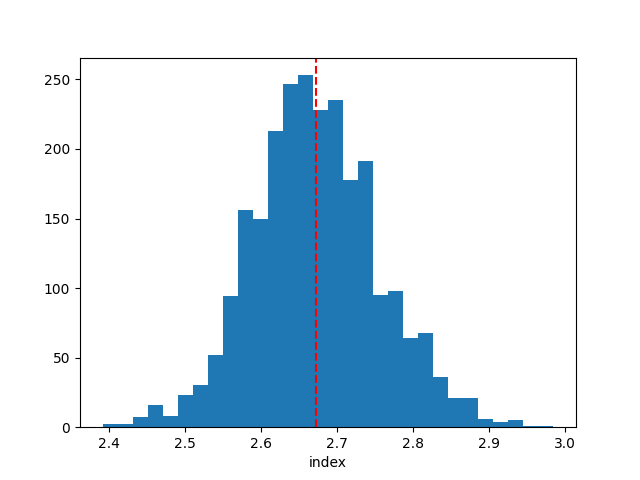

Note
Go to the end to download the full example code. or to run this example in your browser via Binder
Bayesian analysis with nested sampling#
A demonstration of a Bayesian analysis using the nested sampling technique.
Context#
1. Bayesian analysis#
Bayesian inference uses prior knowledge, in the form of a prior distribution, in order to estimate posterior probabilities which we traditionally visualise in the form of corner plots. These distributions contain more information than a maximum likelihood fit as they reveal not only the “best model” but provide a more accurate representation of errors and correlation between parameters. In particular, non-Gaussian degeneracies are complex to estimate with a maximum likelihood approach.
2. Limitations of the Markov Chain Monte Carlo approach#
A well-known approach to estimate this posterior distribution is the Markov Chain Monte Carlo (MCMC). This uses an ensemble of walkers to produce a chain of samples that after a convergence period will reach a stationary state. Once convergence is reached, the successive elements of the chain are samples of the target posterior distribution. However, the weakness of the MCMC approach lies in the “Once convergence” part. If the walkers are started far from the best likelihood region, the convergence time can be long or never reached if the walkers fall in a local minima. The choice of the initialisation point can become critical for complex models with a high number of dimensions and the ability of these walkers to escape a local minimum or to accurately describe a complex likelihood space is not guaranteed.
3. Nested sampling approach#
To overcome these issues, the nested sampling (NS) algorithm has gained traction in physics and astronomy. It is a Monte Carlo algorithm for computing an integral of the likelihood function over the prior model parameter space introduced in Skilling, 2004. The method performs this integral by evolving a collection of points through the parameter space (see recent reviews from Ashton et al., 2022, and Buchner, 2023). Without going into too many details, one important specificity of the NS method is that it starts from the entire parameter space and evolves a collection of live points to map all minima (including multiple modes if any), whereas Markov Chain Monte Carlo methods require an initialisation point and the walkers will explore the local likelihood. The ability of these walkers to escape a local minimum or to accurately describe a complex likelihood space is not guaranteed. This is a fundamental difference with MCMC or Minuit which will only ever probe the vicinity along their minimisation paths and do not have an overview of the global likelihood landscape. The analysis using the NS framework is more CPU time consuming than a standard classical fit, but it provides the full posterior distribution for all parameters, which is out of reach with traditional fitting techniques (N*(N-1)/2 contour plots to generate). In addition, it is more robust to the choice of initialisation, requires less human intervention and is therefore readily integrated in pipeline analysis. In Gammapy, we used the NS implementation of the UltraNest package (see here for more information), one of the leading package in Astronomy (already used in Cosmology and in X-rays). For a nice visualisation of the NS method see here : sampling visualisation. And for a tutorial of UltraNest applied to X-ray fitting with concrete examples and questions see : BXA Tutorial.
Note: please cite UltraNest if used for a paper
If you are using the “UltraNest” library for a paper, please follow its citation scheme: Cite UltraNest.
Proposed approach#
In this example, we will perform a Bayesian analysis with multiple 1D spectra of the Crab nebula data and investigate their posterior distributions.
Setup#
As usual, we’ll start with some setup …
import matplotlib.pyplot as plt
import numpy as np
from gammapy.datasets import Datasets
from gammapy.datasets import SpectrumDatasetOnOff
from gammapy.modeling.models import (
SkyModel,
UniformPrior,
LogUniformPrior,
)
from gammapy.modeling.sampler import Sampler
Loading the spectral datasets#
Here we will load a few Crab 1D spectral data for which we will do a fit.
path = "$GAMMAPY_DATA/joint-crab/spectra/hess/"
datasets = Datasets()
for id in ["23526", "23559", "23592"]:
dataset = SpectrumDatasetOnOff.read(f"{path}pha_obs{id}.fits")
datasets.append(dataset)
Model definition#
Now we want to define the spectral model that will be fitted to the data. The Crab spectra will be fitted here with a simple powerlaw for simplicity.
model = SkyModel.create(spectral_model="pl", name="crab")
Warning
Priors definition: Unlike a traditional fit where priors on the parameters are optional, here it is inherent to the Bayesian approach and are therefore mandatory.
In this case we will set (min,max) prior that will define the
boundaries in which the sampling will be performed.
Note that it is usually recommended to use a LogUniformPrior for
the parameters that have a large amplitude range like the
amplitude parameter.
A UniformPrior means that the samples will be drawn with uniform
probability between the (min,max) values in the linear or log space
in the case of a LogUniformPrior.
model.spectral_model.amplitude.prior = LogUniformPrior(min=1e-12, max=1e-10)
model.spectral_model.index.prior = UniformPrior(min=1, max=5)
datasets.models = [model]
print(datasets.models)
DatasetModels
Component 0: SkyModel
Name : crab
Datasets names : None
Spectral model type : PowerLawSpectralModel
Spatial model type :
Temporal model type :
Parameters:
index : 2.000 +/- 0.00
amplitude : 1.00e-12 +/- 0.0e+00 1 / (TeV s cm2)
reference (frozen): 1.000 TeV
Defining the sampler and options#
As for the Fit object, the Sampler object can receive
different backend (although just one is available for now).
The Sampler comes with “reasonable” default parameters, but you can
change them via the sampler_opts dictionary.
Here is a short description of the most relevant parameters that you
could change :
live_points: minimum number of live points throughout the run. More points allow to discover multiple peaks if existing, but is slower. To test the Prior boundaries and for debugging, a lower number (~100) can be used before a production run with more points (~400 or more).frac_remain: the cut-off condition for the integration, set by the maximum allowed fraction of posterior mass left in the live points vs the dead points. High values (e.g., 0.5) are faster and can be used if the posterior distribution is a relatively simple shape. A low value (1e-1, 1e-2) is optimal for finding peaks, but slower.log_dir: directory where the output files will be stored. If set to None, no files will be written. If set to a string, a directory will be created containing the ongoing status of the run and final results. For time consuming analysis, it is highly recommended to use that option to monitor the run and restart it in case of a crash (withresume=True).
Important note: unlike the MCMC method, you don’t need to define the number of steps for which the sampler will run. The algorithm will automatically stop once a convergence criteria has been reached.
sampler_opts = {
"live_points": 300,
"frac_remain": 0.3,
"log_dir": None,
}
sampler = Sampler(backend="ultranest", sampler_opts=sampler_opts)
Next we can run the sampler on a given dataset. No options are accepted in the run method.
[ultranest] Sampling 300 live points from prior ...
Mono-modal Volume: ~exp(-3.56) * Expected Volume: exp(0.00) Quality: ok
index : +1.0|************************************************| +5.0
amplitude: +1.0e-12|***************************** ********* ** ***| +1.0e-10
Z=-inf(0.00%) | Like=-4393.35..-62.05 [-4393.3498..-352.2907] | it/evals=0/301 eff=0.0000% N=300
Z=-551.2(0.00%) | Like=-545.67..-62.05 [-4393.3498..-352.2907] | it/evals=21/322 eff=95.4545% N=300
Z=-544.3(0.00%) | Like=-538.62..-62.05 [-4393.3498..-352.2907] | it/evals=30/331 eff=96.7742% N=300
Z=-521.4(0.00%) | Like=-515.89..-62.05 [-4393.3498..-352.2907] | it/evals=52/353 eff=98.1132% N=300
Z=-513.4(0.00%) | Like=-507.61..-62.05 [-4393.3498..-352.2907] | it/evals=60/363 eff=95.2381% N=300
Mono-modal Volume: ~exp(-3.86) * Expected Volume: exp(-0.22) Quality: ok
index : +1.0|************************************************| +5.0
amplitude: +1.0e-12|***************************** ** ****** ** ***| +1.0e-10
Z=-505.4(0.00%) | Like=-500.06..-62.05 [-4393.3498..-352.2907] | it/evals=67/372 eff=93.0556% N=300
Z=-482.0(0.00%) | Like=-475.24..-62.05 [-4393.3498..-352.2907] | it/evals=86/394 eff=91.4894% N=300
Z=-475.9(0.00%) | Like=-468.71..-62.05 [-4393.3498..-352.2907] | it/evals=90/398 eff=91.8367% N=300
Z=-462.7(0.00%) | Like=-457.65..-62.05 [-4393.3498..-352.2907] | it/evals=109/420 eff=90.8333% N=300
Z=-452.2(0.00%) | Like=-445.46..-62.05 [-4393.3498..-352.2907] | it/evals=120/433 eff=90.2256% N=300
Mono-modal Volume: ~exp(-4.40) * Expected Volume: exp(-0.45) Quality: ok
index : +1.0|************************************************| +5.0
amplitude: +1.0e-12|***************************** ********* ** ****| +1.0e-10
Z=-436.8(0.00%) | Like=-429.56..-62.05 [-4393.3498..-352.2907] | it/evals=134/452 eff=88.1579% N=300
Z=-408.7(0.00%) | Like=-402.82..-62.05 [-4393.3498..-352.2907] | it/evals=150/474 eff=86.2069% N=300
Z=-389.8(0.00%) | Like=-380.76..-62.05 [-4393.3498..-352.2907] | it/evals=169/496 eff=86.2245% N=300
Z=-373.8(0.00%) | Like=-367.57..-62.05 [-4393.3498..-352.2907] | it/evals=180/513 eff=84.5070% N=300
Z=-362.8(0.00%) | Like=-357.10..-62.05 [-4393.3498..-352.2907] | it/evals=198/536 eff=83.8983% N=300
Mono-modal Volume: ~exp(-4.65) * Expected Volume: exp(-0.67) Quality: ok
index : +1.0| **********************************************| +5.0
amplitude: +1.0e-12| ************************************** ** ****| +1.0e-10
Z=-361.3(0.00%) | Like=-355.27..-62.05 [-4393.3498..-352.2907] | it/evals=201/539 eff=84.1004% N=300
Z=-353.4(0.00%) | Like=-343.76..-62.05 [-352.2074..-185.2079] | it/evals=210/551 eff=83.6653% N=300
Z=-329.1(0.00%) | Like=-321.21..-61.53 [-352.2074..-185.2079] | it/evals=227/573 eff=83.1502% N=300
Z=-313.5(0.00%) | Like=-305.17..-61.53 [-352.2074..-185.2079] | it/evals=240/587 eff=83.6237% N=300
Z=-290.6(0.00%) | Like=-282.09..-61.53 [-352.2074..-185.2079] | it/evals=259/610 eff=83.5484% N=300
Mono-modal Volume: ~exp(-4.96) * Expected Volume: exp(-0.89) Quality: ok
index : +1.0| ********************************************| +5.0
amplitude: +1.0e-12| ***************************************** ****| +1.0e-10
Z=-280.8(0.00%) | Like=-274.90..-61.53 [-352.2074..-185.2079] | it/evals=268/624 eff=82.7160% N=300
Z=-279.8(0.00%) | Like=-273.77..-61.53 [-352.2074..-185.2079] | it/evals=270/630 eff=81.8182% N=300
Z=-265.0(0.00%) | Like=-257.26..-61.53 [-352.2074..-185.2079] | it/evals=287/652 eff=81.5341% N=300
Z=-254.1(0.00%) | Like=-247.75..-61.53 [-352.2074..-185.2079] | it/evals=300/666 eff=81.9672% N=300
Z=-243.3(0.00%) | Like=-237.29..-61.53 [-352.2074..-185.2079] | it/evals=317/688 eff=81.7010% N=300
Z=-236.0(0.00%) | Like=-229.70..-61.53 [-352.2074..-185.2079] | it/evals=330/704 eff=81.6832% N=300
Mono-modal Volume: ~exp(-4.96) Expected Volume: exp(-1.12) Quality: ok
index : +1.0| *****************************************| +5.0
amplitude: +1.0e-12| *********************************************| +1.0e-10
Z=-226.2(0.00%) | Like=-219.13..-61.53 [-352.2074..-185.2079] | it/evals=347/723 eff=82.0331% N=300
Z=-217.5(0.00%) | Like=-211.32..-61.53 [-352.2074..-185.2079] | it/evals=360/741 eff=81.6327% N=300
Z=-208.7(0.00%) | Like=-202.44..-60.33 [-352.2074..-185.2079] | it/evals=376/763 eff=81.2095% N=300
Z=-201.4(0.00%) | Like=-195.27..-60.33 [-352.2074..-185.2079] | it/evals=390/785 eff=80.4124% N=300
Mono-modal Volume: ~exp(-5.37) * Expected Volume: exp(-1.34) Quality: ok
index : +1.0| *************************************** *| +5.0
amplitude: +1.0e-12| *******************************************| +1.0e-10
Z=-196.8(0.00%) | Like=-189.47..-60.33 [-352.2074..-185.2079] | it/evals=402/801 eff=80.2395% N=300
Z=-191.6(0.00%) | Like=-185.67..-60.33 [-352.2074..-185.2079] | it/evals=416/824 eff=79.3893% N=300
Z=-190.4(0.00%) | Like=-183.27..-60.33 [-184.2757..-129.8169] | it/evals=420/830 eff=79.2453% N=300
Z=-182.3(0.00%) | Like=-175.93..-60.33 [-184.2757..-129.8169] | it/evals=437/852 eff=79.1667% N=300
Z=-178.8(0.00%) | Like=-173.09..-60.33 [-184.2757..-129.8169] | it/evals=450/870 eff=78.9474% N=300
Z=-174.6(0.00%) | Like=-168.20..-60.33 [-184.2757..-129.8169] | it/evals=464/892 eff=78.3784% N=300
Mono-modal Volume: ~exp(-5.80) * Expected Volume: exp(-1.56) Quality: ok
index : +1.0| *********************************** | +5.0
amplitude: +1.0e-12| ******************************************| +1.0e-10
Z=-172.1(0.00%) | Like=-165.48..-60.33 [-184.2757..-129.8169] | it/evals=469/897 eff=78.5595% N=300
Z=-168.9(0.00%) | Like=-162.82..-60.33 [-184.2757..-129.8169] | it/evals=480/912 eff=78.4314% N=300
Z=-163.4(0.00%) | Like=-157.44..-60.33 [-184.2757..-129.8169] | it/evals=497/934 eff=78.3912% N=300
Z=-160.0(0.00%) | Like=-154.02..-60.33 [-184.2757..-129.8169] | it/evals=510/952 eff=78.2209% N=300
Z=-156.4(0.00%) | Like=-150.32..-60.33 [-184.2757..-129.8169] | it/evals=525/974 eff=77.8932% N=300
Mono-modal Volume: ~exp(-5.80) Expected Volume: exp(-1.79) Quality: ok
index : +1.0| ****************************** | +5.0
amplitude: +1.0e-12| ******************************** ****** * | +1.0e-10
Z=-153.0(0.00%) | Like=-146.79..-59.93 [-184.2757..-129.8169] | it/evals=540/993 eff=77.9221% N=300
Z=-150.3(0.00%) | Like=-143.30..-59.93 [-184.2757..-129.8169] | it/evals=549/1015 eff=76.7832% N=300
Z=-146.4(0.00%) | Like=-140.09..-59.27 [-184.2757..-129.8169] | it/evals=564/1037 eff=76.5265% N=300
Z=-145.0(0.00%) | Like=-138.84..-59.27 [-184.2757..-129.8169] | it/evals=570/1046 eff=76.4075% N=300
Z=-140.4(0.00%) | Like=-134.34..-59.27 [-184.2757..-129.8169] | it/evals=586/1068 eff=76.3021% N=300
Z=-138.0(0.00%) | Like=-132.19..-59.27 [-184.2757..-129.8169] | it/evals=600/1089 eff=76.0456% N=300
Mono-modal Volume: ~exp(-5.80) Expected Volume: exp(-2.01) Quality: ok
index : +1.0| *************************** +4.0 | +5.0
amplitude: +1.0e-12| ******************************* *** | +1.0e-10
Z=-135.7(0.00%) | Like=-129.53..-59.13 [-129.6709..-93.4304] | it/evals=616/1110 eff=76.0494% N=300
Z=-132.7(0.00%) | Like=-126.23..-59.13 [-129.6709..-93.4304] | it/evals=630/1131 eff=75.8123% N=300
Z=-130.1(0.00%) | Like=-124.05..-59.13 [-129.6709..-93.4304] | it/evals=646/1154 eff=75.6440% N=300
Z=-128.1(0.00%) | Like=-121.45..-59.13 [-129.6709..-93.4304] | it/evals=659/1176 eff=75.2283% N=300
Z=-127.8(0.00%) | Like=-121.06..-59.13 [-129.6709..-93.4304] | it/evals=660/1177 eff=75.2566% N=300
Mono-modal Volume: ~exp(-6.01) * Expected Volume: exp(-2.23) Quality: ok
index : +1.0| +1.9 ************************ +3.8 | +5.0
amplitude: +1.0e-12| ********************************* | +1.0e-10
Z=-124.7(0.00%) | Like=-118.04..-59.13 [-129.6709..-93.4304] | it/evals=670/1194 eff=74.9441% N=300
Z=-122.3(0.00%) | Like=-116.15..-59.13 [-129.6709..-93.4304] | it/evals=685/1216 eff=74.7817% N=300
Z=-121.5(0.00%) | Like=-115.26..-59.13 [-129.6709..-93.4304] | it/evals=690/1225 eff=74.5946% N=300
Z=-118.8(0.00%) | Like=-112.95..-59.13 [-129.6709..-93.4304] | it/evals=708/1247 eff=74.7624% N=300
Z=-116.4(0.00%) | Like=-109.84..-59.13 [-129.6709..-93.4304] | it/evals=720/1265 eff=74.6114% N=300
Z=-114.3(0.00%) | Like=-108.22..-59.13 [-129.6709..-93.4304] | it/evals=735/1287 eff=74.4681% N=300
Mono-modal Volume: ~exp(-6.16) * Expected Volume: exp(-2.46) Quality: ok
index : +1.0| +2.0 ********************** +3.7 | +5.0
amplitude: +1.0e-12| ****************************** | +1.0e-10
Z=-114.0(0.00%) | Like=-107.66..-59.13 [-129.6709..-93.4304] | it/evals=737/1291 eff=74.3693% N=300
Z=-111.9(0.00%) | Like=-105.49..-59.13 [-129.6709..-93.4304] | it/evals=750/1312 eff=74.1107% N=300
Z=-109.5(0.00%) | Like=-103.18..-59.13 [-129.6709..-93.4304] | it/evals=767/1336 eff=74.0347% N=300
Z=-107.3(0.00%) | Like=-100.75..-59.13 [-129.6709..-93.4304] | it/evals=780/1356 eff=73.8636% N=300
Z=-105.4(0.00%) | Like=-99.25..-59.13 [-129.6709..-93.4304] | it/evals=793/1379 eff=73.4940% N=300
Mono-modal Volume: ~exp(-6.45) * Expected Volume: exp(-2.68) Quality: ok
index : +1.0| +2.0 ******************* +3.6 | +5.0
amplitude: +1.0e-12| ************************** +7.4e-11 | +1.0e-10
Z=-104.4(0.00%) | Like=-98.49..-59.13 [-129.6709..-93.4304] | it/evals=804/1394 eff=73.4918% N=300
Z=-103.8(0.00%) | Like=-97.48..-59.13 [-129.6709..-93.4304] | it/evals=810/1400 eff=73.6364% N=300
Z=-101.5(0.00%) | Like=-94.94..-59.13 [-129.6709..-93.4304] | it/evals=826/1422 eff=73.6185% N=300
Z=-99.7(0.00%) | Like=-93.25..-58.84 [-93.3820..-74.6672] | it/evals=839/1446 eff=73.2112% N=300
Z=-99.6(0.00%) | Like=-93.20..-58.84 [-93.3820..-74.6672] | it/evals=840/1449 eff=73.1070% N=300
Z=-98.0(0.00%) | Like=-91.53..-58.84 [-93.3820..-74.6672] | it/evals=856/1471 eff=73.0999% N=300
Z=-96.5(0.00%) | Like=-90.34..-58.84 [-93.3820..-74.6672] | it/evals=870/1490 eff=73.1092% N=300
Mono-modal Volume: ~exp(-6.74) * Expected Volume: exp(-2.90) Quality: ok
index : +1.0| +2.1 ***************** +3.5 | +5.0
amplitude: +1.0e-12| +2.5e-11 *********************** +7.1e-11 | +1.0e-10
Z=-96.4(0.00%) | Like=-90.32..-58.84 [-93.3820..-74.6672] | it/evals=871/1493 eff=73.0092% N=300
Z=-94.5(0.00%) | Like=-87.93..-58.84 [-93.3820..-74.6672] | it/evals=890/1516 eff=73.1908% N=300
Z=-93.3(0.00%) | Like=-86.50..-58.84 [-93.3820..-74.6672] | it/evals=900/1532 eff=73.0519% N=300
Z=-92.0(0.00%) | Like=-85.76..-58.84 [-93.3820..-74.6672] | it/evals=914/1554 eff=72.8868% N=300
Z=-90.4(0.00%) | Like=-83.80..-58.84 [-93.3820..-74.6672] | it/evals=930/1578 eff=72.7700% N=300
Mono-modal Volume: ~exp(-7.11) * Expected Volume: exp(-3.13) Quality: ok
index : +1.0| +2.2 *************** +3.3 | +5.0
amplitude: +1.0e-12| +2.6e-11 ********************* +6.9e-11 | +1.0e-10
Z=-89.6(0.00%) | Like=-83.13..-58.84 [-93.3820..-74.6672] | it/evals=938/1595 eff=72.4324% N=300
Z=-88.4(0.00%) | Like=-81.85..-58.84 [-93.3820..-74.6672] | it/evals=953/1618 eff=72.3065% N=300
Z=-87.7(0.00%) | Like=-80.79..-58.84 [-93.3820..-74.6672] | it/evals=960/1630 eff=72.1805% N=300
Z=-86.2(0.00%) | Like=-79.71..-58.84 [-93.3820..-74.6672] | it/evals=975/1652 eff=72.1154% N=300
Z=-84.9(0.00%) | Like=-78.29..-58.84 [-93.3820..-74.6672] | it/evals=990/1672 eff=72.1574% N=300
Mono-modal Volume: ~exp(-7.61) * Expected Volume: exp(-3.35) Quality: ok
index : +1.0| +2.2 ************* +3.2 | +5.0
amplitude: +1.0e-12| +2.8e-11 ****************** +6.4e-11 | +1.0e-10
Z=-83.9(0.00%) | Like=-77.59..-58.84 [-93.3820..-74.6672] | it/evals=1005/1689 eff=72.3542% N=300
Z=-83.0(0.00%) | Like=-76.74..-58.84 [-93.3820..-74.6672] | it/evals=1020/1707 eff=72.4947% N=300
Z=-82.1(0.00%) | Like=-75.66..-58.84 [-93.3820..-74.6672] | it/evals=1035/1730 eff=72.3776% N=300
Z=-81.2(0.00%) | Like=-74.69..-58.84 [-93.3820..-74.6672] | it/evals=1050/1752 eff=72.3140% N=300
Z=-80.2(0.00%) | Like=-73.75..-58.84 [-74.6397..-66.9296] | it/evals=1066/1776 eff=72.2222% N=300
Mono-modal Volume: ~exp(-7.61) Expected Volume: exp(-3.57) Quality: ok
index : +1.0| +2.3 *********** +3.2 | +5.0
amplitude: +1.0e-12| +3.0e-11 **************** +6.2e-11 | +1.0e-10
Z=-79.3(0.00%) | Like=-72.84..-58.84 [-74.6397..-66.9296] | it/evals=1080/1795 eff=72.2408% N=300
Z=-78.4(0.00%) | Like=-71.99..-58.76 [-74.6397..-66.9296] | it/evals=1097/1817 eff=72.3138% N=300
Z=-77.8(0.00%) | Like=-71.62..-58.76 [-74.6397..-66.9296] | it/evals=1110/1834 eff=72.3598% N=300
Z=-77.2(0.00%) | Like=-70.92..-58.76 [-74.6397..-66.9296] | it/evals=1127/1856 eff=72.4293% N=300
Mono-modal Volume: ~exp(-7.95) * Expected Volume: exp(-3.80) Quality: ok
index : +1.0| +2.3 *********** +3.1 | +5.0
amplitude: +1.0e-12| +3.2e-11 *************** +6.0e-11 | +1.0e-10
Z=-76.7(0.00%) | Like=-70.52..-58.76 [-74.6397..-66.9296] | it/evals=1139/1876 eff=72.2716% N=300
Z=-76.7(0.00%) | Like=-70.49..-58.76 [-74.6397..-66.9296] | it/evals=1140/1877 eff=72.2892% N=300
Z=-76.1(0.00%) | Like=-70.06..-58.76 [-74.6397..-66.9296] | it/evals=1158/1899 eff=72.4203% N=300
Z=-75.7(0.00%) | Like=-69.58..-58.76 [-74.6397..-66.9296] | it/evals=1170/1912 eff=72.5806% N=300
Z=-75.1(0.00%) | Like=-68.97..-58.76 [-74.6397..-66.9296] | it/evals=1189/1936 eff=72.6773% N=300
Z=-74.8(0.01%) | Like=-68.66..-58.76 [-74.6397..-66.9296] | it/evals=1200/1954 eff=72.5514% N=300
Mono-modal Volume: ~exp(-8.13) * Expected Volume: exp(-4.02) Quality: ok
index : +1.0| +2.3 ********** +3.1 | +5.0
amplitude: +1.0e-12| +3.3e-11 ************* +5.9e-11 | +1.0e-10
Z=-74.7(0.01%) | Like=-68.49..-58.76 [-74.6397..-66.9296] | it/evals=1206/1961 eff=72.6069% N=300
Z=-74.2(0.01%) | Like=-68.00..-58.76 [-74.6397..-66.9296] | it/evals=1221/1983 eff=72.5490% N=300
Z=-74.0(0.01%) | Like=-67.69..-58.76 [-74.6397..-66.9296] | it/evals=1230/1996 eff=72.5236% N=300
Z=-73.5(0.02%) | Like=-67.34..-58.76 [-74.6397..-66.9296] | it/evals=1248/2018 eff=72.6426% N=300
Z=-73.2(0.03%) | Like=-67.06..-58.76 [-74.6397..-66.9296] | it/evals=1260/2034 eff=72.6644% N=300
Mono-modal Volume: ~exp(-8.43) * Expected Volume: exp(-4.24) Quality: ok
index : +1.0| +2.4 ********* +3.0 | +5.0
amplitude: +1.0e-12| +3.4e-11 ************* +5.7e-11 | +1.0e-10
Z=-72.9(0.04%) | Like=-66.70..-58.76 [-66.9186..-65.3954] | it/evals=1273/2050 eff=72.7429% N=300
Z=-72.5(0.06%) | Like=-66.24..-58.76 [-66.9186..-65.3954] | it/evals=1290/2069 eff=72.9226% N=300
Z=-72.2(0.08%) | Like=-65.92..-58.76 [-66.9186..-65.3954] | it/evals=1305/2091 eff=72.8643% N=300
Z=-71.9(0.11%) | Like=-65.58..-58.76 [-66.9186..-65.3954] | it/evals=1320/2110 eff=72.9282% N=300
Z=-71.6(0.15%) | Like=-65.18..-58.76 [-65.3042..-65.1221] | it/evals=1333/2132 eff=72.7620% N=300
Mono-modal Volume: ~exp(-8.43) Expected Volume: exp(-4.47) Quality: ok
index : +1.0| +2.4 ******** +3.0 | +5.0
amplitude: +1.0e-12| +3.5e-11 *********** +5.5e-11 | +1.0e-10
Z=-71.2(0.21%) | Like=-64.83..-58.76 [-64.8312..-64.8244]*| it/evals=1347/2152 eff=72.7322% N=300
Z=-71.2(0.22%) | Like=-64.75..-58.76 [-64.7494..-64.7412]*| it/evals=1350/2155 eff=72.7763% N=300
Z=-70.8(0.31%) | Like=-64.31..-58.76 [-64.3109..-64.3104]*| it/evals=1364/2177 eff=72.6692% N=300
Z=-70.6(0.42%) | Like=-64.04..-58.76 [-64.0780..-64.0420] | it/evals=1377/2199 eff=72.5118% N=300
Z=-70.5(0.45%) | Like=-63.99..-58.76 [-63.9890..-63.9865]*| it/evals=1380/2203 eff=72.5171% N=300
Z=-70.1(0.67%) | Like=-63.66..-58.76 [-63.6813..-63.6596] | it/evals=1398/2225 eff=72.6234% N=300
Mono-modal Volume: ~exp(-8.69) * Expected Volume: exp(-4.69) Quality: ok
index : +1.0| +2.4 ******* +2.9 | +5.0
amplitude: +1.0e-12| +3.6e-11 ********** +5.4e-11 | +1.0e-10
Z=-69.9(0.79%) | Like=-63.46..-58.76 [-63.4569..-63.4415] | it/evals=1407/2238 eff=72.6006% N=300
Z=-69.9(0.84%) | Like=-63.41..-58.76 [-63.4349..-63.4076] | it/evals=1410/2242 eff=72.6056% N=300
Z=-69.5(1.18%) | Like=-63.08..-58.76 [-63.0818..-63.0798]*| it/evals=1428/2265 eff=72.6718% N=300
Z=-69.3(1.44%) | Like=-62.90..-58.76 [-62.9000..-62.8826] | it/evals=1440/2279 eff=72.7640% N=300
Z=-69.1(1.79%) | Like=-62.69..-58.76 [-62.6948..-62.6587] | it/evals=1456/2301 eff=72.7636% N=300
Z=-68.9(2.22%) | Like=-62.44..-58.76 [-62.4385..-62.4117] | it/evals=1470/2320 eff=72.7723% N=300
Mono-modal Volume: ~exp(-9.09) * Expected Volume: exp(-4.91) Quality: ok
index : +1.0| +2.5 ****** +2.9 | +5.0
amplitude: +1.0e-12| +3.7e-11 ******** +5.3e-11 | +1.0e-10
Z=-68.8(2.37%) | Like=-62.37..-58.76 [-62.3697..-62.3514] | it/evals=1474/2324 eff=72.8261% N=300
Z=-68.6(2.99%) | Like=-62.24..-58.76 [-62.2376..-62.2305]*| it/evals=1490/2345 eff=72.8606% N=300
Z=-68.5(3.36%) | Like=-62.15..-58.76 [-62.1544..-62.1366] | it/evals=1500/2359 eff=72.8509% N=300
Z=-68.3(3.87%) | Like=-61.99..-58.75 [-62.0015..-61.9894] | it/evals=1512/2381 eff=72.6574% N=300
Z=-68.1(4.66%) | Like=-61.86..-58.75 [-61.8609..-61.8568]*| it/evals=1528/2403 eff=72.6581% N=300
Z=-68.1(4.72%) | Like=-61.85..-58.75 [-61.8568..-61.8459] | it/evals=1530/2406 eff=72.6496% N=300
Mono-modal Volume: ~exp(-9.62) * Expected Volume: exp(-5.14) Quality: ok
index : +1.0| +2.5 ****** +2.9 | +5.0
amplitude: +1.0e-12| +3.7e-11 ******** +5.2e-11 | +1.0e-10
Z=-68.0(5.30%) | Like=-61.68..-58.75 [-61.6771..-61.6721]*| it/evals=1541/2423 eff=72.5860% N=300
Z=-67.8(6.50%) | Like=-61.47..-58.75 [-61.4888..-61.4678] | it/evals=1560/2446 eff=72.6934% N=300
Z=-67.6(7.50%) | Like=-61.33..-58.75 [-61.3292..-61.3289]*| it/evals=1575/2468 eff=72.6476% N=300
Z=-67.5(8.56%) | Like=-61.14..-58.75 [-61.1420..-61.1328]*| it/evals=1590/2486 eff=72.7356% N=300
Z=-67.3(9.87%) | Like=-61.02..-58.75 [-61.0178..-61.0145]*| it/evals=1606/2508 eff=72.7355% N=300
Mono-modal Volume: ~exp(-9.62) Expected Volume: exp(-5.36) Quality: ok
index : +1.0| +2.5 ***** +2.8 | +5.0
amplitude: +1.0e-12| +3.8e-11 ******* +5.1e-11 | +1.0e-10
Z=-67.2(10.93%) | Like=-60.90..-58.75 [-60.9048..-60.9046]*| it/evals=1619/2528 eff=72.6661% N=300
Z=-67.2(11.03%) | Like=-60.90..-58.75 [-60.9046..-60.8920] | it/evals=1620/2530 eff=72.6457% N=300
Z=-67.1(12.20%) | Like=-60.82..-58.75 [-60.8364..-60.8245] | it/evals=1633/2552 eff=72.5133% N=300
Z=-67.0(13.93%) | Like=-60.73..-58.75 [-60.7307..-60.7222]*| it/evals=1650/2573 eff=72.5913% N=300
Z=-66.9(15.21%) | Like=-60.68..-58.75 [-60.6751..-60.6748]*| it/evals=1663/2595 eff=72.4619% N=300
Mono-modal Volume: ~exp(-9.63) * Expected Volume: exp(-5.58) Quality: ok
index : +1.0| +2.5 **** +2.8 | +5.0
amplitude: +1.0e-12| +3.9e-11 ****** +5.0e-11 | +1.0e-10
Z=-66.8(16.49%) | Like=-60.64..-58.75 [-60.6365..-60.6356]*| it/evals=1675/2616 eff=72.3230% N=300
Z=-66.8(17.05%) | Like=-60.61..-58.75 [-60.6086..-60.6047]*| it/evals=1680/2623 eff=72.3203% N=300
Z=-66.7(18.83%) | Like=-60.54..-58.75 [-60.5354..-60.5340]*| it/evals=1698/2645 eff=72.4094% N=300
Z=-66.6(20.02%) | Like=-60.49..-58.75 [-60.4943..-60.4849]*| it/evals=1710/2660 eff=72.4576% N=300
Z=-66.5(21.85%) | Like=-60.37..-58.75 [-60.3843..-60.3726] | it/evals=1728/2682 eff=72.5441% N=300
Z=-66.5(23.11%) | Like=-60.33..-58.75 [-60.3290..-60.3268]*| it/evals=1740/2704 eff=72.3794% N=300
Mono-modal Volume: ~exp(-10.23) * Expected Volume: exp(-5.81) Quality: ok
index : +1.0| +2.5 **** +2.8 | +5.0
amplitude: +1.0e-12| +3.9e-11 ****** +5.0e-11 | +1.0e-10
Z=-66.5(23.36%) | Like=-60.32..-58.75 [-60.3213..-60.3201]*| it/evals=1742/2706 eff=72.4023% N=300
Z=-66.4(25.25%) | Like=-60.22..-58.75 [-60.2237..-60.2149]*| it/evals=1759/2728 eff=72.4465% N=300
Z=-66.3(26.51%) | Like=-60.17..-58.75 [-60.1677..-60.1613]*| it/evals=1770/2741 eff=72.5113% N=300
Z=-66.3(28.37%) | Like=-60.08..-58.75 [-60.0777..-60.0774]*| it/evals=1788/2762 eff=72.6239% N=300
Z=-66.2(29.68%) | Like=-60.06..-58.75 [-60.0589..-60.0530]*| it/evals=1800/2780 eff=72.5806% N=300
Mono-modal Volume: ~exp(-10.23) Expected Volume: exp(-6.03) Quality: ok
index : +1.0| +2.5 **** +2.8 | +5.0
amplitude: +1.0e-12| +4.0e-11 ****** +4.9e-11 | +1.0e-10
Z=-66.2(31.10%) | Like=-60.01..-58.75 [-60.0051..-60.0038]*| it/evals=1814/2801 eff=72.5310% N=300
Z=-66.1(33.10%) | Like=-59.96..-58.75 [-59.9624..-59.9603]*| it/evals=1830/2823 eff=72.5327% N=300
Z=-66.1(35.27%) | Like=-59.91..-58.75 [-59.9081..-59.9048]*| it/evals=1847/2845 eff=72.5737% N=300
Z=-66.0(36.64%) | Like=-59.84..-58.75 [-59.8410..-59.8406]*| it/evals=1860/2863 eff=72.5712% N=300
Z=-66.0(38.37%) | Like=-59.79..-58.75 [-59.7926..-59.7905]*| it/evals=1874/2885 eff=72.4952% N=300
Mono-modal Volume: ~exp(-10.23) Expected Volume: exp(-6.25) Quality: ok
index : +1.0| +2.6 **** +2.8 | +5.0
amplitude: +1.0e-12| +4.0e-11 ***** +4.9e-11 | +1.0e-10
Z=-65.9(39.90%) | Like=-59.74..-58.75 [-59.7431..-59.7421]*| it/evals=1887/2905 eff=72.4376% N=300
Z=-65.9(40.24%) | Like=-59.73..-58.75 [-59.7326..-59.7314]*| it/evals=1890/2911 eff=72.3861% N=300
Z=-65.9(41.88%) | Like=-59.69..-58.75 [-59.6897..-59.6870]*| it/evals=1905/2933 eff=72.3509% N=300
Z=-65.8(43.69%) | Like=-59.65..-58.75 [-59.6518..-59.6428]*| it/evals=1920/2955 eff=72.3164% N=300
Z=-65.8(45.78%) | Like=-59.60..-58.75 [-59.5978..-59.5939]*| it/evals=1937/2978 eff=72.3301% N=300
Mono-modal Volume: ~exp(-10.86) * Expected Volume: exp(-6.48) Quality: ok
index : +1.0| +2.6 **** +2.8 | +5.0
amplitude: +1.0e-12| +4.1e-11 **** +4.8e-11 | +1.0e-10
Z=-65.8(46.50%) | Like=-59.57..-58.75 [-59.5736..-59.5735]*| it/evals=1943/2990 eff=72.2305% N=300
Z=-65.8(47.23%) | Like=-59.57..-58.75 [-59.5662..-59.5635]*| it/evals=1950/2998 eff=72.2758% N=300
Z=-65.7(49.55%) | Like=-59.50..-58.75 [-59.5010..-59.4988]*| it/evals=1970/3020 eff=72.4265% N=300
Z=-65.7(50.59%) | Like=-59.47..-58.75 [-59.4718..-59.4709]*| it/evals=1980/3035 eff=72.3949% N=300
Z=-65.6(52.43%) | Like=-59.44..-58.75 [-59.4394..-59.4352]*| it/evals=1997/3057 eff=72.4338% N=300
Mono-modal Volume: ~exp(-10.86) Expected Volume: exp(-6.70) Quality: ok
index : +1.0| +2.6 **** +2.8 | +5.0
amplitude: +1.0e-12| +4.1e-11 **** +4.8e-11 | +1.0e-10
Z=-65.6(53.91%) | Like=-59.41..-58.75 [-59.4118..-59.4115]*| it/evals=2010/3073 eff=72.4847% N=300
Z=-65.6(55.76%) | Like=-59.37..-58.75 [-59.3689..-59.3686]*| it/evals=2027/3097 eff=72.4705% N=300
Z=-65.6(57.15%) | Like=-59.34..-58.75 [-59.3421..-59.3404]*| it/evals=2040/3112 eff=72.5462% N=300
Z=-65.5(59.00%) | Like=-59.32..-58.75 [-59.3158..-59.3156]*| it/evals=2058/3134 eff=72.6182% N=300
Z=-65.5(60.18%) | Like=-59.29..-58.75 [-59.2915..-59.2914]*| it/evals=2070/3154 eff=72.5298% N=300
Mono-modal Volume: ~exp(-11.05) * Expected Volume: exp(-6.92) Quality: ok
index : +1.0| +2.6 **** +2.8 | +5.0
amplitude: +1.0e-12| +4.1e-11 **** +4.8e-11 | +1.0e-10
Z=-65.5(60.85%) | Like=-59.28..-58.75 [-59.2804..-59.2801]*| it/evals=2077/3164 eff=72.5209% N=300
Z=-65.5(62.47%) | Like=-59.25..-58.75 [-59.2486..-59.2484]*| it/evals=2094/3186 eff=72.5572% N=300
Z=-65.5(63.09%) | Like=-59.24..-58.75 [-59.2350..-59.2337]*| it/evals=2100/3194 eff=72.5639% N=300
Z=-65.4(64.85%) | Like=-59.21..-58.75 [-59.2107..-59.2076]*| it/evals=2119/3217 eff=72.6431% N=300
Z=-65.4(65.86%) | Like=-59.19..-58.75 [-59.1921..-59.1921]*| it/evals=2130/3234 eff=72.5971% N=300
Z=-65.4(67.01%) | Like=-59.18..-58.75 [-59.1753..-59.1744]*| it/evals=2143/3256 eff=72.4966% N=300
Mono-modal Volume: ~exp(-11.32) * Expected Volume: exp(-7.15) Quality: ok
index : +1.0| +2.6 ** +2.7 | +5.0
amplitude: +1.0e-12| +4.2e-11 **** +4.7e-11 | +1.0e-10
Z=-65.4(67.10%) | Like=-59.17..-58.75 [-59.1744..-59.1744]*| it/evals=2144/3257 eff=72.5059% N=300
Z=-65.4(68.47%) | Like=-59.16..-58.75 [-59.1564..-59.1553]*| it/evals=2160/3277 eff=72.5563% N=300
[ultranest] Explored until L=-6e+01
[ultranest] Likelihood function evaluations: 3297
[ultranest] logZ = -65 +- 0.06615
[ultranest] Effective samples strategy satisfied (ESS = 1004.1, need >400)
[ultranest] Posterior uncertainty strategy is satisfied (KL: 0.45+-0.08 nat, need <0.50 nat)
[ultranest] Evidency uncertainty strategy is satisfied (dlogz=0.27, need <0.5)
[ultranest] logZ error budget: single: 0.13 bs:0.07 tail:0.26 total:0.27 required:<0.50
[ultranest] done iterating.
logZ = -64.999 +- 0.283
single instance: logZ = -64.999 +- 0.132
bootstrapped : logZ = -65.001 +- 0.108
tail : logZ = +- 0.262
insert order U test : converged: True correlation: inf iterations
index : 2.358 │ ▁ ▁▁▁▁▂▂▂▃▃▅▅▅▇▇▆▅▆▆▅▄▃▂▂▁▁▁▁▁▁▁▁ ▁ │3.041 2.676 +- 0.086
amplitude : 0.0000000000342│ ▁▁▁▁▁▁▁▂▂▄▄▄▄▆▇▇▆▇▆▇▅▅▅▄▃▂▁▂▁▁▁▁▁ ▁ ▁ │0.0000000000563 0.0000000000444 +- 0.0000000000030
Understanding the outputs#
In the Jupyter notebook, you should be able to see an interactive visualisation of how the parameter space shrinks which starts from the (min,max) shrinks down towards the optimal parameters.
The output above is filled with interesting information. Here we provide a short description of the most relevant information provided above. For more detailed information see the UltraNest docs.
During the sampling
Z=-68.8(0.53%) | Like=-63.96..-58.75 [-63.9570..-63.9539]*| it/evals=640/1068 eff=73.7327% N=300
Some important information here is:
Progress (0.53%): the completed fraction of the integral. This is not a time progress bar. Stays at zero for a good fraction of the run.
Efficiency (eff value) of the sampling: this indicates out of the proposed new points, how many were accepted. If your efficiency is too small (<<1%), maybe you should revise your priors (e.g use a LogUniform prior for the normalisation).
Final outputs
The final lines indicate that all three “convergence” strategies are satisfied (samples, posterior uncertainty, and evidence uncertainty).
logZ = -65.104 +- 0.292
The main goal of the Nested sampling algorithm is to estimate Z (the Bayesian evidence) which is given above together with an uncertainty. In a similar way to deltaLogLike and deltaAIC, deltaLogZ values can be used for model comparison. For more information see : on the use of the evidence for model comparison. An interesting comparison of the efficiency and false discovery rate of model selection with deltaLogLike and deltaLogZ is given in Appendix C of Buchner et al., 2014.
Results stored on disk
if log_dir is set to a name where the results will be stored, then
a directory is created containing many useful results and plots.
A description of these outputs is given in the Ultranest
docs.
Results#
Within a Bayesian analysis, the concept of best-fit has to be viewed differently from what is done in a gradient descent fit.
The output of the Bayesian analysis is the posterior distribution and there is no “best-fit” output. One has to define, based on the posteriors, what we want to consider as “best-fit” and several options are possible:
the mean of the distribution
the median
the lowest likelihood value
By default the DatasetModels will be updated with the mean of
the posterior distributions.
print(result_joint.models)
DatasetModels
Component 0: SkyModel
Name : crab
Datasets names : None
Spectral model type : PowerLawSpectralModel
Spatial model type :
Temporal model type :
Parameters:
index : 2.676 +/- 0.09
amplitude : 4.44e-11 +/- 3.0e-12 1 / (TeV s cm2)
reference (frozen): 1.000 TeV
The Sampler class returns a very rich dictionary.
The most “standard” information about the posterior distributions can
be found in :
print(result_joint.sampler_results["posterior"])
{'mean': [2.6758356223780106, 4.4389128860024855e-11], 'stdev': [0.08614376346974244, 3.03015993143519e-12], 'median': [2.6712162682168987, 4.436083646415789e-11], 'errlo': [2.5900215253522267, 4.12222499646214e-11], 'errup': [2.760033989077184, 4.751625554041585e-11], 'information_gain_bits': [2.692372639265279, 3.1361934085476233]}
Besides mean, errors, etc, an interesting value is the
information gain which estimates how much the posterior
distribution has shrinked with respect to the prior (i.e. how much
we’ve learned). A value < 1 means that the parameter is poorly
constrained within the prior range (we haven’t learned much with respect to our prior assumption).
For a physical example see this
example.
The SamplerResult dictionary contains also other interesting
information :
print(result_joint.sampler_results.keys())
dict_keys(['niter', 'logz', 'logzerr', 'logz_bs', 'logz_single', 'logzerr_tail', 'logzerr_bs', 'ess', 'H', 'Herr', 'posterior', 'weighted_samples', 'samples', 'maximum_likelihood', 'ncall', 'paramnames', 'logzerr_single', 'insertion_order_MWW_test'])
Of particular interest, the samples used in the process to approximate the posterior distribution can be accessed via :
for i, n in enumerate(model.parameters.free_parameters.names):
s = result_joint.samples[:, i]
fig, ax = plt.subplots()
ax.hist(s, bins=30)
ax.axvline(np.mean(s), ls="--", color="red")
ax.set_xlabel(n)
plt.show()
- 

While the above plots are interesting, the real strength of the Bayesian analysis is to visualise all parameters correlations which is usually done using “corner plots”. Ultranest corner plot function is a wrapper around the corner package. See the above link for optional keywords. Other packages exist for corner plots, like chainconsumer which is discussed later in this tutorial.
from ultranest.plot import cornerplot
cornerplot(
result_joint.sampler_results,
plot_datapoints=True,
plot_density=True,
bins=20,
title_fmt=".2e",
smooth=False,
)
plt.show()

Individual run analysis#
Now we’ll analyse several Crab runs individually so that we can compare them.
result_0 = sampler.run(datasets[0])
result_1 = sampler.run(datasets[1])
result_2 = sampler.run(datasets[2])
[ultranest] Sampling 300 live points from prior ...
Mono-modal Volume: ~exp(-3.75) * Expected Volume: exp(0.00) Quality: ok
index : +1.0|************************************************| +5.0
amplitude: +1.0e-12|*************** ************* ******** * ***** | +1.0e-10
Z=-inf(0.00%) | Like=-1320.01..-20.52 [-1320.0096..-102.7139] | it/evals=0/301 eff=0.0000% N=300
Z=-174.7(0.00%) | Like=-170.38..-20.52 [-1320.0096..-102.7139] | it/evals=30/332 eff=93.7500% N=300
Z=-159.4(0.00%) | Like=-154.51..-20.52 [-1320.0096..-102.7139] | it/evals=60/367 eff=89.5522% N=300
Mono-modal Volume: ~exp(-3.80) * Expected Volume: exp(-0.22) Quality: ok
index : +1.0|************************************************| +5.0
amplitude: +1.0e-12|*************** ********************** * *** * | +1.0e-10
Z=-157.6(0.00%) | Like=-152.79..-20.52 [-1320.0096..-102.7139] | it/evals=67/377 eff=87.0130% N=300
Z=-149.6(0.00%) | Like=-144.31..-20.52 [-1320.0096..-102.7139] | it/evals=90/405 eff=85.7143% N=300
Z=-139.2(0.00%) | Like=-134.05..-20.52 [-1320.0096..-102.7139] | it/evals=120/440 eff=85.7143% N=300
Mono-modal Volume: ~exp(-4.39) * Expected Volume: exp(-0.45) Quality: ok
index : +1.0| ******************** **************************| +5.0
amplitude: +1.0e-12|*************** ********************** * ***** | +1.0e-10
Z=-134.3(0.00%) | Like=-129.43..-20.52 [-1320.0096..-102.7139] | it/evals=134/456 eff=85.8974% N=300
Z=-130.3(0.00%) | Like=-125.31..-20.52 [-1320.0096..-102.7139] | it/evals=150/477 eff=84.7458% N=300
Z=-118.1(0.00%) | Like=-112.55..-20.52 [-1320.0096..-102.7139] | it/evals=180/513 eff=84.5070% N=300
Mono-modal Volume: ~exp(-4.74) * Expected Volume: exp(-0.67) Quality: ok
index : +1.0| *********************************************| +5.0
amplitude: +1.0e-12| ************** ********************** ******* | +1.0e-10
Z=-112.1(0.00%) | Like=-107.36..-20.52 [-1320.0096..-102.7139] | it/evals=201/540 eff=83.7500% N=300
Z=-108.8(0.00%) | Like=-103.28..-20.52 [-1320.0096..-102.7139] | it/evals=210/551 eff=83.6653% N=300
Z=-99.0(0.00%) | Like=-93.82..-20.52 [-102.4258..-64.6792] | it/evals=240/590 eff=82.7586% N=300
Mono-modal Volume: ~exp(-4.74) Expected Volume: exp(-0.89) Quality: ok
index : +1.0| ********************************************| +5.0
amplitude: +1.0e-12| ************************************ **** * | +1.0e-10
Z=-94.1(0.00%) | Like=-89.31..-20.52 [-102.4258..-64.6792] | it/evals=268/625 eff=82.4615% N=300
Z=-93.8(0.00%) | Like=-88.65..-20.52 [-102.4258..-64.6792] | it/evals=270/628 eff=82.3171% N=300
Z=-89.5(0.00%) | Like=-84.26..-20.52 [-102.4258..-64.6792] | it/evals=296/668 eff=80.4348% N=300
Z=-88.8(0.00%) | Like=-83.63..-20.52 [-102.4258..-64.6792] | it/evals=300/673 eff=80.4290% N=300
Z=-83.4(0.00%) | Like=-78.07..-20.52 [-102.4258..-64.6792] | it/evals=327/713 eff=79.1768% N=300
Z=-82.7(0.00%) | Like=-77.35..-20.52 [-102.4258..-64.6792] | it/evals=330/718 eff=78.9474% N=300
Mono-modal Volume: ~exp(-4.90) * Expected Volume: exp(-1.12) Quality: ok
index : +1.0| ******************************************| +5.0
amplitude: +1.0e-12| ************************************ ** * | +1.0e-10
Z=-81.8(0.00%) | Like=-76.99..-20.52 [-102.4258..-64.6792] | it/evals=335/725 eff=78.8235% N=300
Z=-77.3(0.00%) | Like=-72.53..-20.52 [-102.4258..-64.6792] | it/evals=359/765 eff=77.2043% N=300
Z=-77.2(0.00%) | Like=-72.53..-20.52 [-102.4258..-64.6792] | it/evals=360/766 eff=77.2532% N=300
Z=-74.1(0.00%) | Like=-69.53..-20.52 [-102.4258..-64.6792] | it/evals=386/806 eff=76.2846% N=300
Z=-73.8(0.00%) | Like=-68.95..-20.52 [-102.4258..-64.6792] | it/evals=390/811 eff=76.3209% N=300
Mono-modal Volume: ~exp(-5.47) * Expected Volume: exp(-1.34) Quality: ok
index : +1.0| ************************************* | +5.0
amplitude: +1.0e-12| *********************************** * | +1.0e-10
Z=-72.6(0.00%) | Like=-67.94..-20.52 [-102.4258..-64.6792] | it/evals=402/829 eff=75.9924% N=300
Z=-70.9(0.00%) | Like=-65.81..-20.52 [-102.4258..-64.6792] | it/evals=420/856 eff=75.5396% N=300
Z=-68.3(0.00%) | Like=-63.64..-20.52 [-64.5959..-46.1004] | it/evals=446/896 eff=74.8322% N=300
Z=-68.0(0.00%) | Like=-63.27..-20.52 [-64.5959..-46.1004] | it/evals=450/900 eff=75.0000% N=300
Mono-modal Volume: ~exp(-5.47) Expected Volume: exp(-1.56) Quality: ok
index : +1.0| ********************************* | +5.0
amplitude: +1.0e-12| ********************************* +7.7e-11 | +1.0e-10
Z=-65.6(0.00%) | Like=-60.62..-20.52 [-64.5959..-46.1004] | it/evals=472/937 eff=74.0973% N=300
Z=-64.7(0.00%) | Like=-59.68..-20.52 [-64.5959..-46.1004] | it/evals=480/947 eff=74.1886% N=300
Z=-62.0(0.00%) | Like=-57.00..-20.52 [-64.5959..-46.1004] | it/evals=508/987 eff=73.9447% N=300
Z=-61.8(0.00%) | Like=-56.98..-20.52 [-64.5959..-46.1004] | it/evals=510/989 eff=74.0203% N=300
Z=-59.6(0.00%) | Like=-54.49..-20.52 [-64.5959..-46.1004] | it/evals=534/1029 eff=73.2510% N=300
Mono-modal Volume: ~exp(-5.47) Expected Volume: exp(-1.79) Quality: ok
index : +1.0| ***************************** +4.1 | +5.0
amplitude: +1.0e-12| ******************************* +7.2e-11 | +1.0e-10
Z=-59.1(0.00%) | Like=-54.28..-20.52 [-64.5959..-46.1004] | it/evals=540/1036 eff=73.3696% N=300
Z=-57.4(0.00%) | Like=-52.15..-20.52 [-64.5959..-46.1004] | it/evals=564/1076 eff=72.6804% N=300
Z=-56.9(0.00%) | Like=-51.72..-20.52 [-64.5959..-46.1004] | it/evals=570/1086 eff=72.5191% N=300
Z=-54.8(0.00%) | Like=-49.73..-20.52 [-64.5959..-46.1004] | it/evals=598/1127 eff=72.3096% N=300
Z=-54.6(0.00%) | Like=-49.61..-20.52 [-64.5959..-46.1004] | it/evals=600/1129 eff=72.3764% N=300
Mono-modal Volume: ~exp(-5.92) * Expected Volume: exp(-2.01) Quality: ok
index : +1.0| ************************** +3.9 | +5.0
amplitude: +1.0e-12| ***************************** +7.0e-11 | +1.0e-10
Z=-54.4(0.00%) | Like=-49.46..-20.52 [-64.5959..-46.1004] | it/evals=603/1132 eff=72.4760% N=300
Z=-52.4(0.00%) | Like=-46.97..-20.52 [-64.5959..-46.1004] | it/evals=630/1164 eff=72.9167% N=300
Z=-50.7(0.00%) | Like=-45.60..-20.52 [-46.0939..-33.9271] | it/evals=654/1206 eff=72.1854% N=300
Z=-50.4(0.00%) | Like=-45.14..-20.52 [-46.0939..-33.9271] | it/evals=660/1219 eff=71.8172% N=300
Mono-modal Volume: ~exp(-5.92) Expected Volume: exp(-2.23) Quality: ok
index : +1.0| ************************ +3.7 | +5.0
amplitude: +1.0e-12| ************************** +6.6e-11 | +1.0e-10
Z=-48.9(0.00%) | Like=-43.83..-20.52 [-46.0939..-33.9271] | it/evals=685/1257 eff=71.5778% N=300
Z=-48.6(0.00%) | Like=-43.54..-20.52 [-46.0939..-33.9271] | it/evals=690/1265 eff=71.5026% N=300
Z=-47.0(0.00%) | Like=-41.60..-20.52 [-46.0939..-33.9271] | it/evals=715/1306 eff=71.0736% N=300
Z=-46.7(0.00%) | Like=-41.43..-20.52 [-46.0939..-33.9271] | it/evals=720/1313 eff=71.0760% N=300
Mono-modal Volume: ~exp(-6.48) * Expected Volume: exp(-2.46) Quality: ok
index : +1.0| ********************* +3.6 | +5.0
amplitude: +1.0e-12| ************************ +6.3e-11 | +1.0e-10
Z=-45.7(0.00%) | Like=-40.38..-20.52 [-46.0939..-33.9271] | it/evals=737/1340 eff=70.8654% N=300
Z=-45.0(0.00%) | Like=-39.81..-20.52 [-46.0939..-33.9271] | it/evals=750/1361 eff=70.6880% N=300
Z=-43.4(0.00%) | Like=-38.16..-20.52 [-46.0939..-33.9271] | it/evals=780/1402 eff=70.7804% N=300
Mono-modal Volume: ~exp(-6.72) * Expected Volume: exp(-2.68) Quality: ok
index : +1.0| +1.9 ******************* +3.4 | +5.0
amplitude: +1.0e-12| ********************* +5.9e-11 | +1.0e-10
Z=-42.3(0.00%) | Like=-37.10..-20.52 [-46.0939..-33.9271] | it/evals=804/1442 eff=70.4028% N=300
Z=-42.0(0.00%) | Like=-36.65..-20.52 [-46.0939..-33.9271] | it/evals=810/1449 eff=70.4961% N=300
Z=-40.7(0.00%) | Like=-35.07..-20.52 [-46.0939..-33.9271] | it/evals=835/1489 eff=70.2271% N=300
Z=-40.4(0.00%) | Like=-34.74..-20.52 [-46.0939..-33.9271] | it/evals=840/1497 eff=70.1754% N=300
Z=-38.9(0.00%) | Like=-33.42..-20.52 [-33.9190..-27.5146] | it/evals=870/1533 eff=70.5596% N=300
Mono-modal Volume: ~exp(-7.02) * Expected Volume: exp(-2.90) Quality: ok
index : +1.0| +2.0 **************** +3.3 | +5.0
amplitude: +1.0e-12| ******************** +5.7e-11 | +1.0e-10
Z=-38.9(0.00%) | Like=-33.32..-20.52 [-33.9190..-27.5146] | it/evals=871/1534 eff=70.5835% N=300
Z=-37.7(0.00%) | Like=-32.15..-20.52 [-33.9190..-27.5146] | it/evals=899/1573 eff=70.6206% N=300
Z=-37.6(0.00%) | Like=-32.14..-20.52 [-33.9190..-27.5146] | it/evals=900/1575 eff=70.5882% N=300
Z=-36.6(0.00%) | Like=-31.27..-20.52 [-33.9190..-27.5146] | it/evals=929/1614 eff=70.7002% N=300
Z=-36.6(0.00%) | Like=-31.26..-20.52 [-33.9190..-27.5146] | it/evals=930/1615 eff=70.7224% N=300
Mono-modal Volume: ~exp(-7.45) * Expected Volume: exp(-3.13) Quality: ok
index : +1.0| +2.0 *************** +3.2 | +5.0
amplitude: +1.0e-12| ****************** +5.4e-11 | +1.0e-10
Z=-36.3(0.00%) | Like=-30.97..-20.52 [-33.9190..-27.5146] | it/evals=938/1626 eff=70.7391% N=300
Z=-35.7(0.01%) | Like=-30.27..-20.52 [-33.9190..-27.5146] | it/evals=960/1653 eff=70.9534% N=300
Z=-34.9(0.01%) | Like=-29.62..-20.52 [-33.9190..-27.5146] | it/evals=987/1692 eff=70.9052% N=300
Z=-34.9(0.01%) | Like=-29.55..-20.52 [-33.9190..-27.5146] | it/evals=990/1697 eff=70.8661% N=300
Mono-modal Volume: ~exp(-7.45) Expected Volume: exp(-3.35) Quality: ok
index : +1.0| +2.1 ************* +3.1 | +5.0
amplitude: +1.0e-12| **************** +5.2e-11 | +1.0e-10
Z=-34.2(0.03%) | Like=-28.81..-20.47 [-33.9190..-27.5146] | it/evals=1018/1732 eff=71.0894% N=300
Z=-34.1(0.03%) | Like=-28.78..-20.47 [-33.9190..-27.5146] | it/evals=1020/1734 eff=71.1297% N=300
Z=-33.4(0.06%) | Like=-27.90..-20.47 [-33.9190..-27.5146] | it/evals=1050/1773 eff=71.2831% N=300
Mono-modal Volume: ~exp(-7.54) * Expected Volume: exp(-3.57) Quality: ok
index : +1.0| +2.1 ************ +3.1 | +5.0
amplitude: +1.0e-12| ************** +5.0e-11 | +1.0e-10
Z=-32.9(0.10%) | Like=-27.47..-20.47 [-27.4948..-26.9185] | it/evals=1072/1800 eff=71.4667% N=300
Z=-32.7(0.12%) | Like=-27.26..-20.47 [-27.4948..-26.9185] | it/evals=1080/1811 eff=71.4758% N=300
Z=-32.1(0.21%) | Like=-26.68..-20.47 [-26.6835..-26.6744]*| it/evals=1110/1851 eff=71.5667% N=300
Z=-31.6(0.35%) | Like=-26.17..-20.47 [-26.1703..-26.1031] | it/evals=1137/1890 eff=71.5094% N=300
Mono-modal Volume: ~exp(-7.56) * Expected Volume: exp(-3.80) Quality: ok
index : +1.0| +2.2 *********** +3.0 | +5.0
amplitude: +1.0e-12| ************* +4.8e-11 | +1.0e-10
Z=-31.6(0.36%) | Like=-26.10..-20.47 [-26.1022..-26.0989]*| it/evals=1139/1892 eff=71.5452% N=300
Z=-31.6(0.37%) | Like=-26.10..-20.47 [-26.0989..-26.0977]*| it/evals=1140/1893 eff=71.5631% N=300
Z=-31.1(0.59%) | Like=-25.63..-20.47 [-25.6264..-25.6026] | it/evals=1167/1932 eff=71.5074% N=300
Z=-31.1(0.62%) | Like=-25.57..-20.47 [-25.5805..-25.5680] | it/evals=1170/1937 eff=71.4722% N=300
Z=-30.7(0.92%) | Like=-25.23..-20.47 [-25.2347..-25.1626] | it/evals=1197/1976 eff=71.4200% N=300
Z=-30.6(0.97%) | Like=-25.12..-20.47 [-25.1336..-25.1186] | it/evals=1200/1981 eff=71.3861% N=300
Mono-modal Volume: ~exp(-7.75) * Expected Volume: exp(-4.02) Quality: ok
index : +1.0| +2.2 ********** +3.0 | +5.0
amplitude: +1.0e-12| +2.4e-11 ************ +4.6e-11 | +1.0e-10
Z=-30.5(1.05%) | Like=-24.99..-20.47 [-24.9860..-24.9783]*| it/evals=1206/1991 eff=71.3187% N=300
Z=-30.2(1.48%) | Like=-24.61..-20.47 [-24.6099..-24.5810] | it/evals=1230/2020 eff=71.5116% N=300
Z=-29.8(2.21%) | Like=-24.23..-20.47 [-24.2324..-24.2049] | it/evals=1260/2058 eff=71.6724% N=300
Mono-modal Volume: ~exp(-8.05) * Expected Volume: exp(-4.24) Quality: ok
index : +1.0| +2.3 ********* +2.9 | +5.0
amplitude: +1.0e-12| +2.5e-11 *********** +4.5e-11 | +1.0e-10
Z=-29.6(2.63%) | Like=-23.92..-20.47 [-23.9411..-23.9240] | it/evals=1273/2083 eff=71.3965% N=300
Z=-29.4(3.37%) | Like=-23.71..-20.47 [-23.7128..-23.7117]*| it/evals=1290/2103 eff=71.5474% N=300
Z=-29.0(4.60%) | Like=-23.45..-20.47 [-23.4460..-23.4338] | it/evals=1317/2143 eff=71.4596% N=300
Z=-29.0(4.75%) | Like=-23.42..-20.47 [-23.4239..-23.4168]*| it/evals=1320/2148 eff=71.4286% N=300
Mono-modal Volume: ~exp(-8.69) * Expected Volume: exp(-4.47) Quality: ok
index : +1.0| +2.3 ******** +2.9 | +5.0
amplitude: +1.0e-12| +2.6e-11 ********* +4.4e-11 | +1.0e-10
Z=-28.8(5.83%) | Like=-23.22..-20.47 [-23.2182..-23.2171]*| it/evals=1340/2175 eff=71.4667% N=300
Z=-28.7(6.46%) | Like=-23.10..-20.47 [-23.1033..-23.1011]*| it/evals=1350/2187 eff=71.5421% N=300
Z=-28.4(8.37%) | Like=-22.92..-20.47 [-22.9309..-22.9185] | it/evals=1380/2226 eff=71.6511% N=300
Mono-modal Volume: ~exp(-8.69) Expected Volume: exp(-4.69) Quality: ok
index : +1.0| +2.3 ******** +2.8 | +5.0
amplitude: +1.0e-12| +2.7e-11 ********* +4.2e-11 | +1.0e-10
Z=-28.2(10.46%) | Like=-22.73..-20.47 [-22.7334..-22.7144] | it/evals=1407/2263 eff=71.6760% N=300
Z=-28.2(10.69%) | Like=-22.71..-20.47 [-22.7055..-22.6959]*| it/evals=1410/2267 eff=71.6828% N=300
Z=-28.0(13.03%) | Like=-22.50..-20.47 [-22.4981..-22.4955]*| it/evals=1437/2306 eff=71.6351% N=300
Z=-28.0(13.33%) | Like=-22.47..-20.47 [-22.4680..-22.4565] | it/evals=1440/2309 eff=71.6775% N=300
Z=-27.8(16.07%) | Like=-22.29..-20.47 [-22.2911..-22.2829]*| it/evals=1470/2347 eff=71.8124% N=300
Mono-modal Volume: ~exp(-8.94) * Expected Volume: exp(-4.91) Quality: ok
index : +1.0| +2.3 ****** +2.8 | +5.0
amplitude: +1.0e-12| +2.7e-11 ******** +4.2e-11 | +1.0e-10
Z=-27.8(16.51%) | Like=-22.27..-20.47 [-22.2690..-22.2621]*| it/evals=1474/2352 eff=71.8324% N=300
Z=-27.6(18.84%) | Like=-22.14..-20.47 [-22.1433..-22.1422]*| it/evals=1497/2393 eff=71.5241% N=300
Z=-27.6(19.18%) | Like=-22.14..-20.47 [-22.1358..-22.1166] | it/evals=1500/2397 eff=71.5308% N=300
Z=-27.5(21.78%) | Like=-22.00..-20.47 [-21.9988..-21.9949]*| it/evals=1524/2436 eff=71.3483% N=300
Z=-27.5(22.37%) | Like=-21.96..-20.47 [-21.9605..-21.9507]*| it/evals=1530/2451 eff=71.1297% N=300
Mono-modal Volume: ~exp(-8.94) Expected Volume: exp(-5.14) Quality: ok
index : +1.0| +2.4 ****** +2.8 | +5.0
amplitude: +1.0e-12| +2.8e-11 ******* +4.1e-11 | +1.0e-10
Z=-27.4(24.91%) | Like=-21.85..-20.47 [-21.8521..-21.8507]*| it/evals=1552/2487 eff=70.9648% N=300
Z=-27.3(25.81%) | Like=-21.84..-20.47 [-21.8352..-21.8178] | it/evals=1560/2496 eff=71.0383% N=300
Z=-27.2(29.20%) | Like=-21.69..-20.47 [-21.6900..-21.6864]*| it/evals=1588/2534 eff=71.0833% N=300
Z=-27.2(29.47%) | Like=-21.69..-20.47 [-21.6856..-21.6811]*| it/evals=1590/2539 eff=71.0138% N=300
Mono-modal Volume: ~exp(-9.77) * Expected Volume: exp(-5.36) Quality: ok
index : +1.0| +2.4 ****** +2.8 | +5.0
amplitude: +1.0e-12| +2.9e-11 ****** +4.0e-11 | +1.0e-10
Z=-27.1(31.59%) | Like=-21.61..-20.47 [-21.6245..-21.6097] | it/evals=1608/2564 eff=71.0247% N=300
Z=-27.1(33.06%) | Like=-21.53..-20.47 [-21.5321..-21.5285]*| it/evals=1620/2583 eff=70.9593% N=300
Z=-27.0(36.61%) | Like=-21.45..-20.47 [-21.4513..-21.4501]*| it/evals=1648/2622 eff=70.9733% N=300
Z=-27.0(36.83%) | Like=-21.44..-20.47 [-21.4438..-21.4432]*| it/evals=1650/2624 eff=70.9983% N=300
Mono-modal Volume: ~exp(-9.77) Expected Volume: exp(-5.58) Quality: ok
index : +1.0| +2.4 ***** +2.7 | +5.0
amplitude: +1.0e-12| +2.9e-11 ****** +3.9e-11 | +1.0e-10
Z=-26.9(39.93%) | Like=-21.38..-20.47 [-21.3832..-21.3822]*| it/evals=1675/2660 eff=70.9746% N=300
Z=-26.9(40.53%) | Like=-21.37..-20.47 [-21.3657..-21.3624]*| it/evals=1680/2666 eff=71.0059% N=300
Z=-26.8(44.10%) | Like=-21.29..-20.47 [-21.2945..-21.2944]*| it/evals=1710/2701 eff=71.2203% N=300
Z=-26.7(47.56%) | Like=-21.22..-20.46 [-21.2232..-21.2211]*| it/evals=1739/2740 eff=71.2705% N=300
Z=-26.7(47.68%) | Like=-21.22..-20.46 [-21.2211..-21.2170]*| it/evals=1740/2742 eff=71.2531% N=300
Mono-modal Volume: ~exp(-10.02) * Expected Volume: exp(-5.81) Quality: ok
index : +1.0| +2.4 ***** +2.7 | +5.0
amplitude: +1.0e-12| +3.0e-11 ****** +3.9e-11 | +1.0e-10
Z=-26.7(47.85%) | Like=-21.22..-20.46 [-21.2160..-21.2144]*| it/evals=1742/2747 eff=71.1892% N=300
Z=-26.6(51.01%) | Like=-21.16..-20.46 [-21.1556..-21.1532]*| it/evals=1770/2781 eff=71.3422% N=300
Z=-26.6(54.24%) | Like=-21.09..-20.46 [-21.0865..-21.0853]*| it/evals=1798/2820 eff=71.3492% N=300
Z=-26.6(54.47%) | Like=-21.08..-20.46 [-21.0843..-21.0778]*| it/evals=1800/2822 eff=71.3719% N=300
Mono-modal Volume: ~exp(-10.02) Expected Volume: exp(-6.03) Quality: ok
index : +1.0| +2.4 **** +2.7 | +5.0
amplitude: +1.0e-12| +3.0e-11 ***** +3.8e-11 | +1.0e-10
Z=-26.5(56.77%) | Like=-21.04..-20.46 [-21.0439..-21.0401]*| it/evals=1822/2859 eff=71.1997% N=300
Z=-26.5(57.61%) | Like=-21.04..-20.46 [-21.0354..-21.0320]*| it/evals=1830/2870 eff=71.2062% N=300
Z=-26.5(60.31%) | Like=-20.97..-20.46 [-20.9748..-20.9742]*| it/evals=1856/2909 eff=71.1384% N=300
Z=-26.5(60.66%) | Like=-20.97..-20.46 [-20.9683..-20.9665]*| it/evals=1860/2916 eff=71.1009% N=300
Mono-modal Volume: ~exp(-10.30) * Expected Volume: exp(-6.25) Quality: ok
index : +1.0| +2.4 **** +2.7 | +5.0
amplitude: +1.0e-12| +3.0e-11 **** +3.8e-11 | +1.0e-10
Z=-26.4(62.26%) | Like=-20.94..-20.46 [-20.9421..-20.9420]*| it/evals=1876/2939 eff=71.0875% N=300
Z=-26.4(63.69%) | Like=-20.92..-20.46 [-20.9206..-20.9175]*| it/evals=1890/2957 eff=71.1329% N=300
Z=-26.4(66.42%) | Like=-20.88..-20.46 [-20.8772..-20.8703]*| it/evals=1919/2996 eff=71.1795% N=300
Z=-26.4(66.52%) | Like=-20.87..-20.46 [-20.8703..-20.8697]*| it/evals=1920/2997 eff=71.1902% N=300
Mono-modal Volume: ~exp(-10.60) * Expected Volume: exp(-6.48) Quality: ok
index : +1.0| +2.5 **** +2.7 | +5.0
amplitude: +1.0e-12| +3.1e-11 **** +3.7e-11 | +1.0e-10
Z=-26.3(68.53%) | Like=-20.84..-20.46 [-20.8401..-20.8375]*| it/evals=1943/3024 eff=71.3289% N=300
Z=-26.3(69.13%) | Like=-20.83..-20.46 [-20.8305..-20.8304]*| it/evals=1950/3031 eff=71.4024% N=300
[ultranest] Explored until L=-2e+01
[ultranest] Likelihood function evaluations: 3044
[ultranest] logZ = -25.97 +- 0.101
[ultranest] Effective samples strategy satisfied (ESS = 996.0, need >400)
[ultranest] Posterior uncertainty strategy is satisfied (KL: 0.46+-0.10 nat, need <0.50 nat)
[ultranest] Evidency uncertainty strategy is satisfied (dlogz=0.28, need <0.5)
[ultranest] logZ error budget: single: 0.12 bs:0.10 tail:0.26 total:0.28 required:<0.50
[ultranest] done iterating.
logZ = -25.966 +- 0.355
single instance: logZ = -25.966 +- 0.123
bootstrapped : logZ = -25.968 +- 0.239
tail : logZ = +- 0.262
insert order U test : converged: True correlation: inf iterations
index : 2.11 │ ▁ ▁▁▁▁▁▂▂▃▅▅▅▆▆▇▇▆▇▇▇▅▄▃▂▂▁▁▁▁▁▁ ▁ ▁ │3.12 2.57 +- 0.13
amplitude : 0.0000000000196│ ▁ ▁▁▁▁▁▁▂▂▃▄▄▆▅▆▆▆▇▆▅▄▃▃▃▂▂▁▁▁▁▁▁ ▁▁ │0.0000000000483 0.0000000000339 +- 0.0000000000038
[ultranest] Sampling 300 live points from prior ...
Mono-modal Volume: ~exp(-4.37) * Expected Volume: exp(0.00) Quality: ok
index : +1.0|************************************************| +5.0
amplitude: +1.0e-12|******************* **** ********* *************| +1.0e-10
Z=-inf(0.00%) | Like=-618.29..-19.62 [-618.2937..-126.4622] | it/evals=0/301 eff=0.0000% N=300
Z=-214.6(0.00%) | Like=-209.48..-19.62 [-618.2937..-126.4622] | it/evals=30/332 eff=93.7500% N=300
Z=-199.9(0.00%) | Like=-193.39..-19.62 [-618.2937..-126.4622] | it/evals=60/363 eff=95.2381% N=300
Mono-modal Volume: ~exp(-4.37) Expected Volume: exp(-0.22) Quality: ok
index : +1.0|************************************************| +5.0
amplitude: +1.0e-12|************************ ********* *************| +1.0e-10
Z=-188.7(0.00%) | Like=-183.65..-19.62 [-618.2937..-126.4622] | it/evals=87/400 eff=87.0000% N=300
Z=-185.9(0.00%) | Like=-179.90..-19.62 [-618.2937..-126.4622] | it/evals=90/403 eff=87.3786% N=300
Z=-173.4(0.00%) | Like=-168.12..-19.62 [-618.2937..-126.4622] | it/evals=120/438 eff=86.9565% N=300
Mono-modal Volume: ~exp(-4.73) * Expected Volume: exp(-0.45) Quality: ok
index : +1.0|************************************************| +5.0
amplitude: +1.0e-12|************************ ***********************| +1.0e-10
Z=-165.0(0.00%) | Like=-158.86..-19.62 [-618.2937..-126.4622] | it/evals=134/457 eff=85.3503% N=300
Z=-155.1(0.00%) | Like=-149.17..-19.62 [-618.2937..-126.4622] | it/evals=150/476 eff=85.2273% N=300
Z=-142.5(0.00%) | Like=-136.29..-19.62 [-618.2937..-126.4622] | it/evals=180/514 eff=84.1121% N=300
Mono-modal Volume: ~exp(-4.78) * Expected Volume: exp(-0.67) Quality: ok
index : +1.0| **********************************************| +5.0
amplitude: +1.0e-12| **********************************************| +1.0e-10
Z=-132.9(0.00%) | Like=-126.31..-19.62 [-126.3073..-56.5869] | it/evals=201/538 eff=84.4538% N=300
Z=-127.4(0.00%) | Like=-122.22..-19.62 [-126.3073..-56.5869] | it/evals=210/548 eff=84.6774% N=300
Z=-111.8(0.00%) | Like=-106.08..-19.62 [-126.3073..-56.5869] | it/evals=240/582 eff=85.1064% N=300
Mono-modal Volume: ~exp(-4.83) * Expected Volume: exp(-0.89) Quality: ok
index : +1.0| *******************************************| +5.0
amplitude: +1.0e-12| ********************************************| +1.0e-10
Z=-100.1(0.00%) | Like=-94.37..-19.62 [-126.3073..-56.5869] | it/evals=268/614 eff=85.3503% N=300
Z=-99.5(0.00%) | Like=-94.01..-19.62 [-126.3073..-56.5869] | it/evals=270/616 eff=85.4430% N=300
Z=-89.4(0.00%) | Like=-83.81..-19.62 [-126.3073..-56.5869] | it/evals=295/656 eff=82.8652% N=300
Z=-88.1(0.00%) | Like=-82.55..-19.62 [-126.3073..-56.5869] | it/evals=300/662 eff=82.8729% N=300
Z=-79.2(0.00%) | Like=-73.41..-19.62 [-126.3073..-56.5869] | it/evals=330/700 eff=82.5000% N=300
Mono-modal Volume: ~exp(-5.45) * Expected Volume: exp(-1.12) Quality: ok
index : +1.0| *****************************************| +5.0
amplitude: +1.0e-12| *******************************************| +1.0e-10
Z=-78.0(0.00%) | Like=-72.71..-19.62 [-126.3073..-56.5869] | it/evals=335/707 eff=82.3096% N=300
Z=-71.4(0.00%) | Like=-65.06..-19.54 [-126.3073..-56.5869] | it/evals=360/739 eff=82.0046% N=300
Z=-64.4(0.00%) | Like=-58.60..-19.20 [-126.3073..-56.5869] | it/evals=390/777 eff=81.7610% N=300
Mono-modal Volume: ~exp(-5.45) Expected Volume: exp(-1.34) Quality: ok
index : +1.0| ***************************************| +5.0
amplitude: +1.0e-12| *****************************************| +1.0e-10
Z=-60.1(0.00%) | Like=-55.01..-19.20 [-56.5573..-38.4604] | it/evals=418/812 eff=81.6406% N=300
Z=-59.9(0.00%) | Like=-54.62..-19.20 [-56.5573..-38.4604] | it/evals=420/814 eff=81.7121% N=300
Z=-56.3(0.00%) | Like=-51.26..-19.20 [-56.5573..-38.4604] | it/evals=448/854 eff=80.8664% N=300
Z=-56.1(0.00%) | Like=-51.03..-19.20 [-56.5573..-38.4604] | it/evals=450/856 eff=80.9353% N=300
Mono-modal Volume: ~exp(-5.56) * Expected Volume: exp(-1.56) Quality: ok
index : +1.0| *********************************** | +5.0
amplitude: +1.0e-12| ***************************************| +1.0e-10
Z=-54.5(0.00%) | Like=-49.75..-19.20 [-56.5573..-38.4604] | it/evals=469/888 eff=79.7619% N=300
Z=-53.7(0.00%) | Like=-48.78..-19.20 [-56.5573..-38.4604] | it/evals=480/902 eff=79.7342% N=300
Z=-51.5(0.00%) | Like=-46.32..-19.20 [-56.5573..-38.4604] | it/evals=507/943 eff=78.8491% N=300
Z=-51.2(0.00%) | Like=-45.99..-19.20 [-56.5573..-38.4604] | it/evals=510/947 eff=78.8253% N=300
Z=-48.8(0.00%) | Like=-43.80..-19.20 [-56.5573..-38.4604] | it/evals=532/988 eff=77.3256% N=300
Mono-modal Volume: ~exp(-5.83) * Expected Volume: exp(-1.79) Quality: ok
index : +1.0| +2.0 ****************************** | +5.0
amplitude: +1.0e-12| **************************************| +1.0e-10
Z=-48.5(0.00%) | Like=-43.66..-19.20 [-56.5573..-38.4604] | it/evals=536/995 eff=77.1223% N=300
Z=-48.2(0.00%) | Like=-43.29..-19.20 [-56.5573..-38.4604] | it/evals=540/999 eff=77.2532% N=300
Z=-46.5(0.00%) | Like=-41.64..-19.20 [-56.5573..-38.4604] | it/evals=569/1039 eff=76.9959% N=300
Z=-46.4(0.00%) | Like=-41.58..-19.20 [-56.5573..-38.4604] | it/evals=570/1040 eff=77.0270% N=300
Z=-44.7(0.00%) | Like=-39.67..-19.20 [-56.5573..-38.4604] | it/evals=598/1079 eff=76.7651% N=300
Z=-44.5(0.00%) | Like=-39.57..-19.20 [-56.5573..-38.4604] | it/evals=600/1081 eff=76.8246% N=300
Mono-modal Volume: ~exp(-6.21) * Expected Volume: exp(-2.01) Quality: ok
index : +1.0| +2.0 *************************** | +5.0
amplitude: +1.0e-12| +2.6e-11 *********************************** *| +1.0e-10
Z=-44.3(0.00%) | Like=-39.28..-19.20 [-56.5573..-38.4604] | it/evals=603/1087 eff=76.6201% N=300
Z=-42.9(0.00%) | Like=-37.95..-19.20 [-38.4115..-28.9720] | it/evals=629/1128 eff=75.9662% N=300
Z=-42.8(0.00%) | Like=-37.90..-19.20 [-38.4115..-28.9720] | it/evals=630/1129 eff=75.9952% N=300
Z=-41.1(0.00%) | Like=-36.17..-19.20 [-38.4115..-28.9720] | it/evals=660/1168 eff=76.0369% N=300
Mono-modal Volume: ~exp(-6.50) * Expected Volume: exp(-2.23) Quality: ok
index : +1.0| +2.1 ************************* +4.0 | +5.0
amplitude: +1.0e-12| +2.8e-11 ********************************* | +1.0e-10
Z=-40.7(0.00%) | Like=-35.75..-19.20 [-38.4115..-28.9720] | it/evals=670/1180 eff=76.1364% N=300
Z=-39.7(0.00%) | Like=-34.47..-19.20 [-38.4115..-28.9720] | it/evals=690/1205 eff=76.2431% N=300
Z=-38.3(0.00%) | Like=-33.27..-19.20 [-38.4115..-28.9720] | it/evals=719/1245 eff=76.0847% N=300
Z=-38.2(0.00%) | Like=-33.27..-19.20 [-38.4115..-28.9720] | it/evals=720/1247 eff=76.0296% N=300
Mono-modal Volume: ~exp(-6.64) * Expected Volume: exp(-2.46) Quality: ok
index : +1.0| +2.1 ********************* +3.8 | +5.0
amplitude: +1.0e-12| +3.0e-11 ****************************** | +1.0e-10
Z=-37.5(0.00%) | Like=-32.57..-19.20 [-38.4115..-28.9720] | it/evals=737/1274 eff=75.6674% N=300
Z=-37.0(0.00%) | Like=-31.96..-19.20 [-38.4115..-28.9720] | it/evals=750/1290 eff=75.7576% N=300
Z=-36.1(0.00%) | Like=-31.08..-19.20 [-38.4115..-28.9720] | it/evals=774/1332 eff=75.0000% N=300
Z=-35.9(0.00%) | Like=-31.03..-19.20 [-38.4115..-28.9720] | it/evals=780/1339 eff=75.0722% N=300
Mono-modal Volume: ~exp(-6.64) Expected Volume: exp(-2.68) Quality: ok
index : +1.0| +2.2 ******************* +3.7 | +5.0
amplitude: +1.0e-12| +3.2e-11 *************************** | +1.0e-10
Z=-35.2(0.00%) | Like=-30.34..-19.20 [-38.4115..-28.9720] | it/evals=804/1375 eff=74.7907% N=300
Z=-35.0(0.00%) | Like=-29.90..-19.20 [-38.4115..-28.9720] | it/evals=810/1385 eff=74.6544% N=300
Z=-34.0(0.01%) | Like=-28.97..-19.20 [-38.4115..-28.9720] | it/evals=838/1424 eff=74.5552% N=300
Z=-34.0(0.01%) | Like=-28.97..-19.20 [-28.9695..-25.9221] | it/evals=840/1429 eff=74.4021% N=300
Z=-33.4(0.01%) | Like=-28.60..-19.20 [-28.9695..-25.9221] | it/evals=861/1471 eff=73.5269% N=300
Z=-33.2(0.01%) | Like=-28.40..-19.20 [-28.9695..-25.9221] | it/evals=870/1487 eff=73.2940% N=300
Mono-modal Volume: ~exp(-6.64) Expected Volume: exp(-2.90) Quality: ok
index : +1.0| +2.2 ****************** +3.7 | +5.0
amplitude: +1.0e-12| +3.3e-11 ************************** | +1.0e-10
Z=-32.7(0.02%) | Like=-27.73..-19.20 [-28.9695..-25.9221] | it/evals=895/1523 eff=73.1807% N=300
Z=-32.5(0.02%) | Like=-27.40..-19.20 [-28.9695..-25.9221] | it/evals=900/1528 eff=73.2899% N=300
Z=-31.8(0.05%) | Like=-26.71..-19.20 [-28.9695..-25.9221] | it/evals=924/1568 eff=72.8707% N=300
Z=-31.7(0.06%) | Like=-26.47..-19.20 [-28.9695..-25.9221] | it/evals=930/1578 eff=72.7700% N=300
Mono-modal Volume: ~exp(-7.42) * Expected Volume: exp(-3.13) Quality: ok
index : +1.0| +2.3 **************** +3.5 | +5.0
amplitude: +1.0e-12| +3.5e-11 *********************** | +1.0e-10
Z=-31.5(0.07%) | Like=-26.27..-19.20 [-28.9695..-25.9221] | it/evals=938/1589 eff=72.7696% N=300
Z=-30.9(0.12%) | Like=-25.68..-19.20 [-25.9191..-25.5011] | it/evals=960/1616 eff=72.9483% N=300
Z=-30.2(0.23%) | Like=-24.98..-19.20 [-24.9796..-24.9691] | it/evals=989/1655 eff=72.9889% N=300
Z=-30.2(0.24%) | Like=-24.97..-19.20 [-24.9796..-24.9691] | it/evals=990/1656 eff=73.0088% N=300
Mono-modal Volume: ~exp(-7.64) * Expected Volume: exp(-3.35) Quality: ok
index : +1.0| +2.3 ************** +3.4 | +5.0
amplitude: +1.0e-12| +3.8e-11 ******************** +7.6e-11 | +1.0e-10
Z=-29.9(0.34%) | Like=-24.65..-19.20 [-24.6806..-24.6542] | it/evals=1005/1678 eff=72.9318% N=300
Z=-29.6(0.46%) | Like=-24.39..-19.20 [-24.3872..-24.3809]*| it/evals=1020/1699 eff=72.9092% N=300
Z=-29.0(0.78%) | Like=-23.99..-19.20 [-24.0160..-23.9935] | it/evals=1050/1738 eff=73.0181% N=300
Mono-modal Volume: ~exp(-7.64) Expected Volume: exp(-3.57) Quality: ok
index : +1.0| +2.4 ************* +3.4 | +5.0
amplitude: +1.0e-12| +3.9e-11 ****************** +7.4e-11 | +1.0e-10
Z=-28.7(1.11%) | Like=-23.61..-19.20 [-23.6077..-23.6050]*| it/evals=1072/1774 eff=72.7273% N=300
Z=-28.6(1.26%) | Like=-23.54..-19.20 [-23.5566..-23.5394] | it/evals=1080/1785 eff=72.7273% N=300
Z=-28.2(1.81%) | Like=-23.15..-19.20 [-23.1516..-23.1493]*| it/evals=1110/1825 eff=72.7869% N=300
Mono-modal Volume: ~exp(-8.12) * Expected Volume: exp(-3.80) Quality: ok
index : +1.0| +2.4 ************ +3.3 | +5.0
amplitude: +1.0e-12| +4.1e-11 **************** +7.2e-11 | +1.0e-10
Z=-27.9(2.58%) | Like=-22.83..-19.20 [-22.8542..-22.8323] | it/evals=1139/1863 eff=72.8727% N=300
Z=-27.8(2.61%) | Like=-22.81..-19.20 [-22.8081..-22.7849] | it/evals=1140/1864 eff=72.8900% N=300
Z=-27.5(3.73%) | Like=-22.45..-19.20 [-22.4612..-22.4493] | it/evals=1170/1903 eff=72.9881% N=300
Z=-27.2(4.94%) | Like=-22.13..-19.20 [-22.1346..-22.1207] | it/evals=1199/1943 eff=72.9763% N=300
Z=-27.2(5.00%) | Like=-22.12..-19.20 [-22.1346..-22.1207] | it/evals=1200/1945 eff=72.9483% N=300
Mono-modal Volume: ~exp(-8.12) Expected Volume: exp(-4.02) Quality: ok
index : +1.0| +2.5 ********** +3.2 | +5.0
amplitude: +1.0e-12| +4.2e-11 *************** +7.0e-11 | +1.0e-10
Z=-26.9(6.47%) | Like=-21.87..-19.20 [-21.8872..-21.8726] | it/evals=1226/1980 eff=72.9762% N=300
Z=-26.9(6.72%) | Like=-21.85..-19.20 [-21.8495..-21.8495]*| it/evals=1230/1984 eff=73.0404% N=300
Z=-26.7(8.51%) | Like=-21.61..-19.20 [-21.6144..-21.6130]*| it/evals=1260/2023 eff=73.1283% N=300
Mono-modal Volume: ~exp(-8.53) * Expected Volume: exp(-4.24) Quality: ok
index : +1.0| +2.5 ********** +3.2 | +5.0
amplitude: +1.0e-12| +4.3e-11 ************* +6.9e-11 | +1.0e-10
Z=-26.6(9.41%) | Like=-21.49..-19.20 [-21.4932..-21.4778] | it/evals=1273/2046 eff=72.9095% N=300
Z=-26.4(10.72%) | Like=-21.30..-19.20 [-21.3214..-21.3035] | it/evals=1290/2064 eff=73.1293% N=300
Z=-26.2(13.37%) | Like=-21.09..-19.20 [-21.0867..-21.0817]*| it/evals=1320/2102 eff=73.2519% N=300
Mono-modal Volume: ~exp(-8.65) * Expected Volume: exp(-4.47) Quality: ok
index : +1.0| +2.5 ******** +3.1 | +5.0
amplitude: +1.0e-12| +4.5e-11 *********** +6.7e-11 | +1.0e-10
Z=-26.1(15.42%) | Like=-20.93..-19.20 [-20.9317..-20.9314]*| it/evals=1340/2128 eff=73.3042% N=300
Z=-26.0(16.46%) | Like=-20.83..-19.20 [-20.8339..-20.8321]*| it/evals=1350/2141 eff=73.3297% N=300
Z=-25.8(19.96%) | Like=-20.62..-19.20 [-20.6220..-20.6192]*| it/evals=1380/2179 eff=73.4433% N=300
Z=-25.7(22.48%) | Like=-20.53..-19.18 [-20.5261..-20.5246]*| it/evals=1403/2219 eff=73.1110% N=300
Mono-modal Volume: ~exp(-8.95) * Expected Volume: exp(-4.69) Quality: ok
index : +1.0| +2.6 ******* +3.1 | +5.0
amplitude: +1.0e-12| +4.6e-11 *********** +6.5e-11 | +1.0e-10
Z=-25.7(22.93%) | Like=-20.52..-19.18 [-20.5169..-20.5106]*| it/evals=1407/2224 eff=73.1289% N=300
Z=-25.7(23.36%) | Like=-20.50..-19.18 [-20.5043..-20.4994]*| it/evals=1410/2229 eff=73.0949% N=300
Z=-25.5(27.07%) | Like=-20.37..-19.18 [-20.3782..-20.3672] | it/evals=1440/2269 eff=73.1336% N=300
Z=-25.4(30.30%) | Like=-20.27..-19.18 [-20.2718..-20.2697]*| it/evals=1466/2308 eff=73.0080% N=300
Z=-25.4(30.87%) | Like=-20.26..-19.18 [-20.2650..-20.2644]*| it/evals=1470/2312 eff=73.0616% N=300
Mono-modal Volume: ~exp(-8.95) Expected Volume: exp(-4.91) Quality: ok
index : +1.0| +2.6 ******* +3.1 | +5.0
amplitude: +1.0e-12| +4.7e-11 ********* +6.4e-11 | +1.0e-10
Z=-25.3(33.80%) | Like=-20.17..-19.18 [-20.1750..-20.1668]*| it/evals=1493/2347 eff=72.9360% N=300
Z=-25.3(34.74%) | Like=-20.14..-19.18 [-20.1447..-20.1390]*| it/evals=1500/2359 eff=72.8509% N=300
Z=-25.2(38.17%) | Like=-20.04..-19.18 [-20.0380..-20.0323]*| it/evals=1526/2398 eff=72.7359% N=300
Z=-25.2(38.70%) | Like=-20.03..-19.18 [-20.0291..-20.0284]*| it/evals=1530/2402 eff=72.7878% N=300
Mono-modal Volume: ~exp(-9.40) * Expected Volume: exp(-5.14) Quality: ok
index : +1.0| +2.6 ****** +3.0 | +5.0
amplitude: +1.0e-12| +4.8e-11 ********* +6.3e-11 | +1.0e-10
Z=-25.1(40.05%) | Like=-20.00..-19.17 [-19.9972..-19.9945]*| it/evals=1541/2415 eff=72.8605% N=300
Z=-25.1(42.38%) | Like=-19.95..-19.16 [-19.9468..-19.9420]*| it/evals=1560/2438 eff=72.9654% N=300
Z=-25.0(45.57%) | Like=-19.90..-19.16 [-19.8954..-19.8899]*| it/evals=1586/2477 eff=72.8525% N=300
Z=-25.0(46.10%) | Like=-19.89..-19.16 [-19.8873..-19.8849]*| it/evals=1590/2481 eff=72.9023% N=300
Mono-modal Volume: ~exp(-9.90) * Expected Volume: exp(-5.36) Quality: ok
index : +1.0| +2.6 ****** +3.0 | +5.0
amplitude: +1.0e-12| +4.9e-11 ******* +6.2e-11 | +1.0e-10
Z=-24.9(48.43%) | Like=-19.85..-19.16 [-19.8511..-19.8486]*| it/evals=1608/2514 eff=72.6287% N=300
Z=-24.9(49.82%) | Like=-19.82..-19.16 [-19.8241..-19.8234]*| it/evals=1620/2532 eff=72.5806% N=300
Z=-24.8(52.97%) | Like=-19.77..-19.16 [-19.7745..-19.7721]*| it/evals=1647/2570 eff=72.5551% N=300
Z=-24.8(53.34%) | Like=-19.77..-19.16 [-19.7705..-19.7704]*| it/evals=1650/2575 eff=72.5275% N=300
Mono-modal Volume: ~exp(-9.90) Expected Volume: exp(-5.58) Quality: ok
index : +1.0| +2.6 ***** +3.0 | +5.0
amplitude: +1.0e-12| +4.9e-11 ******* +6.2e-11 | +1.0e-10
Z=-24.8(56.45%) | Like=-19.73..-19.16 [-19.7341..-19.7338]*| it/evals=1678/2609 eff=72.6722% N=300
Z=-24.8(56.65%) | Like=-19.73..-19.16 [-19.7306..-19.7292]*| it/evals=1680/2613 eff=72.6329% N=300
Z=-24.7(59.81%) | Like=-19.68..-19.16 [-19.6775..-19.6753]*| it/evals=1710/2646 eff=72.8900% N=300
Z=-24.7(62.72%) | Like=-19.63..-19.16 [-19.6334..-19.6329]*| it/evals=1740/2683 eff=73.0172% N=300
Mono-modal Volume: ~exp(-9.90) Expected Volume: exp(-5.81) Quality: ok
index : +1.0| +2.6 ***** +3.0 | +5.0
amplitude: +1.0e-12| +5.0e-11 ******* +6.1e-11 | +1.0e-10
Z=-24.6(64.93%) | Like=-19.60..-19.16 [-19.5952..-19.5925]*| it/evals=1764/2720 eff=72.8926% N=300
Z=-24.6(65.52%) | Like=-19.57..-19.16 [-19.5726..-19.5690]*| it/evals=1770/2727 eff=72.9295% N=300
Z=-24.6(68.17%) | Like=-19.54..-19.16 [-19.5366..-19.5366]*| it/evals=1800/2766 eff=72.9927% N=300
Mono-modal Volume: ~exp(-10.38) * Expected Volume: exp(-6.03) Quality: ok
index : +1.0| +2.7 **** +2.9 | +5.0
amplitude: +1.0e-12| +5.0e-11 ****** +6.0e-11 | +1.0e-10
Z=-24.6(68.93%) | Like=-19.53..-19.16 [-19.5325..-19.5298]*| it/evals=1809/2781 eff=72.9141% N=300
[ultranest] Explored until L=-2e+01
[ultranest] Likelihood function evaluations: 2801
[ultranest] logZ = -24.16 +- 0.07262
[ultranest] Effective samples strategy satisfied (ESS = 972.3, need >400)
[ultranest] Posterior uncertainty strategy is satisfied (KL: 0.46+-0.07 nat, need <0.50 nat)
[ultranest] Evidency uncertainty strategy is satisfied (dlogz=0.27, need <0.5)
[ultranest] logZ error budget: single: 0.12 bs:0.07 tail:0.26 total:0.27 required:<0.50
[ultranest] done iterating.
logZ = -24.197 +- 0.350
single instance: logZ = -24.197 +- 0.117
bootstrapped : logZ = -24.161 +- 0.231
tail : logZ = +- 0.262
insert order U test : converged: True correlation: inf iterations
index : 2.31 │ ▁▁▁▁▁▂▂▄▄▅▆▇▆▇▇▇▆▆▄▄▃▃▂▂▁▁▁▁▁▁▁ ▁ │3.61 2.83 +- 0.16
amplitude : 0.0000000000360│ ▁▁▁▁▁▁▂▂▂▄▅▅▅▆▆▆▇▇▅▆▅▄▅▃▂▂▂▂▁▁▁▁▁▁▁▁▁ │0.0000000000777 0.0000000000549 +- 0.0000000000058
[ultranest] Sampling 300 live points from prior ...
Mono-modal Volume: ~exp(-3.81) * Expected Volume: exp(0.00) Quality: ok
index : +1.0|************************************************| +5.0
amplitude: +1.0e-12|************************* ***** **** ** **** * *| +1.0e-10
Z=-inf(0.00%) | Like=-536.49..-13.90 [-536.4917..-86.7477] | it/evals=0/301 eff=0.0000% N=300
Z=-151.8(0.00%) | Like=-147.60..-13.51 [-536.4917..-86.7477] | it/evals=30/332 eff=93.7500% N=300
Z=-142.9(0.00%) | Like=-137.97..-13.51 [-536.4917..-86.7477] | it/evals=60/365 eff=92.3077% N=300
Mono-modal Volume: ~exp(-3.81) Expected Volume: exp(-0.22) Quality: ok
index : +1.0|************************************************| +5.0
amplitude: +1.0e-12|******************************* **** ** ****** *| +1.0e-10
Z=-133.2(0.00%) | Like=-127.61..-13.51 [-536.4917..-86.7477] | it/evals=90/400 eff=90.0000% N=300
Z=-118.7(0.00%) | Like=-113.60..-13.51 [-536.4917..-86.7477] | it/evals=120/433 eff=90.2256% N=300
Mono-modal Volume: ~exp(-4.14) * Expected Volume: exp(-0.45) Quality: ok
index : +1.0|****************************************** *****| +5.0
amplitude: +1.0e-12|*************************************** ****** *| +1.0e-10
Z=-111.7(0.00%) | Like=-106.74..-13.51 [-536.4917..-86.7477] | it/evals=134/452 eff=88.1579% N=300
Z=-105.5(0.00%) | Like=-100.74..-13.51 [-536.4917..-86.7477] | it/evals=150/476 eff=85.2273% N=300
Z=-95.3(0.00%) | Like=-90.21..-13.51 [-536.4917..-86.7477] | it/evals=180/511 eff=85.3081% N=300
Mono-modal Volume: ~exp(-4.78) * Expected Volume: exp(-0.67) Quality: ok
index : +1.0| **********************************************| +5.0
amplitude: +1.0e-12| ***********************************************| +1.0e-10
Z=-90.7(0.00%) | Like=-85.63..-13.51 [-86.4431..-43.5184] | it/evals=201/536 eff=85.1695% N=300
Z=-88.7(0.00%) | Like=-83.47..-13.51 [-86.4431..-43.5184] | it/evals=210/545 eff=85.7143% N=300
Z=-82.7(0.00%) | Like=-77.44..-13.51 [-86.4431..-43.5184] | it/evals=240/584 eff=84.5070% N=300
Mono-modal Volume: ~exp(-4.97) * Expected Volume: exp(-0.89) Quality: ok
index : +1.0| ********************************************| +5.0
amplitude: +1.0e-12| **********************************************| +1.0e-10
Z=-74.5(0.00%) | Like=-68.81..-13.51 [-86.4431..-43.5184] | it/evals=268/615 eff=85.0794% N=300
Z=-73.9(0.00%) | Like=-68.38..-13.51 [-86.4431..-43.5184] | it/evals=270/617 eff=85.1735% N=300
Z=-66.3(0.00%) | Like=-60.74..-13.51 [-86.4431..-43.5184] | it/evals=300/656 eff=84.2697% N=300
Z=-60.0(0.00%) | Like=-54.43..-13.45 [-86.4431..-43.5184] | it/evals=328/697 eff=82.6196% N=300
Z=-59.5(0.00%) | Like=-53.79..-13.45 [-86.4431..-43.5184] | it/evals=330/699 eff=82.7068% N=300
Mono-modal Volume: ~exp(-5.52) * Expected Volume: exp(-1.12) Quality: ok
index : +1.0| *****************************************| +5.0
amplitude: +1.0e-12| ********************************************| +1.0e-10
Z=-58.2(0.00%) | Like=-52.67..-13.45 [-86.4431..-43.5184] | it/evals=335/707 eff=82.3096% N=300
Z=-54.3(0.00%) | Like=-49.51..-13.45 [-86.4431..-43.5184] | it/evals=360/736 eff=82.5688% N=300
Z=-50.6(0.00%) | Like=-45.78..-13.45 [-86.4431..-43.5184] | it/evals=390/772 eff=82.6271% N=300
Mono-modal Volume: ~exp(-5.71) * Expected Volume: exp(-1.34) Quality: ok
index : +1.0| ************************************* * | +5.0
amplitude: +1.0e-12| ******************************************| +1.0e-10
Z=-49.2(0.00%) | Like=-44.34..-13.45 [-86.4431..-43.5184] | it/evals=402/786 eff=82.7160% N=300
Z=-47.2(0.00%) | Like=-42.26..-13.45 [-43.4540..-29.0990] | it/evals=420/808 eff=82.6772% N=300
Z=-44.6(0.00%) | Like=-39.80..-13.45 [-43.4540..-29.0990] | it/evals=450/845 eff=82.5688% N=300
Mono-modal Volume: ~exp(-6.01) * Expected Volume: exp(-1.56) Quality: ok
index : +1.0| ********************************* | +5.0
amplitude: +1.0e-12| *****************************************| +1.0e-10
Z=-42.8(0.00%) | Like=-37.80..-13.45 [-43.4540..-29.0990] | it/evals=469/871 eff=82.1366% N=300
Z=-41.8(0.00%) | Like=-36.67..-13.45 [-43.4540..-29.0990] | it/evals=480/885 eff=82.0513% N=300
Z=-39.6(0.00%) | Like=-34.81..-13.45 [-43.4540..-29.0990] | it/evals=510/922 eff=81.9936% N=300
Mono-modal Volume: ~exp(-6.25) * Expected Volume: exp(-1.79) Quality: ok
index : +1.0| ***************************** | +5.0
amplitude: +1.0e-12| ****************************************| +1.0e-10
Z=-38.1(0.00%) | Like=-33.38..-13.45 [-43.4540..-29.0990] | it/evals=536/955 eff=81.8321% N=300
Z=-37.9(0.00%) | Like=-33.05..-13.45 [-43.4540..-29.0990] | it/evals=540/961 eff=81.6944% N=300
Z=-36.0(0.00%) | Like=-31.28..-13.31 [-43.4540..-29.0990] | it/evals=569/1001 eff=81.1698% N=300
Z=-35.9(0.00%) | Like=-31.25..-13.31 [-43.4540..-29.0990] | it/evals=570/1002 eff=81.1966% N=300
Z=-34.6(0.00%) | Like=-29.97..-13.31 [-43.4540..-29.0990] | it/evals=600/1037 eff=81.4111% N=300
Mono-modal Volume: ~exp(-6.28) * Expected Volume: exp(-2.01) Quality: correlation length: 8 (-)
index : +1.0| +1.9 ************************* +4.0 | +5.0
amplitude: +1.0e-12| ***************************************| +1.0e-10
Z=-34.4(0.00%) | Like=-29.66..-13.31 [-43.4540..-29.0990] | it/evals=603/1042 eff=81.2668% N=300
Z=-33.2(0.00%) | Like=-28.51..-13.31 [-29.0960..-20.7456] | it/evals=630/1077 eff=81.0811% N=300
Z=-31.7(0.00%) | Like=-26.91..-13.31 [-29.0960..-20.7456] | it/evals=660/1116 eff=80.8824% N=300
Mono-modal Volume: ~exp(-6.28) Expected Volume: exp(-2.23) Quality: ok
index : +1.0| +2.0 ********************** +3.8 | +5.0
amplitude: +1.0e-12| +2.4e-11 *************************************| +1.0e-10
Z=-30.5(0.00%) | Like=-25.53..-13.31 [-29.0960..-20.7456] | it/evals=689/1153 eff=80.7737% N=300
Z=-30.4(0.00%) | Like=-25.47..-13.31 [-29.0960..-20.7456] | it/evals=690/1154 eff=80.7963% N=300
Z=-29.4(0.00%) | Like=-24.62..-13.31 [-29.0960..-20.7456] | it/evals=715/1193 eff=80.0672% N=300
Z=-29.3(0.00%) | Like=-24.38..-13.31 [-29.0960..-20.7456] | it/evals=720/1201 eff=79.9112% N=300
Mono-modal Volume: ~exp(-6.58) * Expected Volume: exp(-2.46) Quality: ok
index : +1.0| +2.1 ******************* +3.7 | +5.0
amplitude: +1.0e-12| +2.5e-11 ************************************ | +1.0e-10
Z=-28.6(0.00%) | Like=-23.88..-13.31 [-29.0960..-20.7456] | it/evals=737/1226 eff=79.5896% N=300
Z=-28.2(0.00%) | Like=-23.46..-13.31 [-29.0960..-20.7456] | it/evals=750/1243 eff=79.5334% N=300
Z=-27.3(0.01%) | Like=-22.48..-13.31 [-29.0960..-20.7456] | it/evals=780/1280 eff=79.5918% N=300
Mono-modal Volume: ~exp(-6.70) * Expected Volume: exp(-2.68) Quality: ok
index : +1.0| +2.1 ****************** +3.5 | +5.0
amplitude: +1.0e-12| +2.8e-11 ******************************* | +1.0e-10
Z=-26.5(0.02%) | Like=-21.54..-13.31 [-29.0960..-20.7456] | it/evals=804/1313 eff=79.3682% N=300
Z=-26.3(0.03%) | Like=-21.28..-13.31 [-29.0960..-20.7456] | it/evals=810/1321 eff=79.3340% N=300
Z=-25.5(0.06%) | Like=-20.65..-13.31 [-20.7176..-19.8824] | it/evals=836/1362 eff=78.7194% N=300
Z=-25.4(0.07%) | Like=-20.60..-13.31 [-20.7176..-19.8824] | it/evals=840/1369 eff=78.5781% N=300
Z=-24.8(0.13%) | Like=-20.03..-13.31 [-20.7176..-19.8824] | it/evals=865/1409 eff=77.9982% N=300
Z=-24.7(0.14%) | Like=-19.94..-13.31 [-20.7176..-19.8824] | it/evals=870/1418 eff=77.8175% N=300
Mono-modal Volume: ~exp(-6.70) Expected Volume: exp(-2.90) Quality: ok
index : +1.0| +2.2 *************** +3.4 | +5.0
amplitude: +1.0e-12| +3.0e-11 **************************** | +1.0e-10
Z=-24.2(0.25%) | Like=-19.40..-13.31 [-19.3980..-19.3799] | it/evals=897/1453 eff=77.7971% N=300
Z=-24.1(0.26%) | Like=-19.36..-13.31 [-19.3622..-19.3571]*| it/evals=900/1457 eff=77.7874% N=300
Z=-23.6(0.41%) | Like=-18.96..-13.31 [-18.9908..-18.9616] | it/evals=926/1497 eff=77.3601% N=300
Z=-23.6(0.43%) | Like=-18.88..-13.31 [-18.9340..-18.8795] | it/evals=930/1503 eff=77.3067% N=300
Mono-modal Volume: ~exp(-7.25) * Expected Volume: exp(-3.13) Quality: ok
index : +1.0| +2.3 ************** +3.4 | +5.0
amplitude: +1.0e-12| +3.2e-11 ************************* | +1.0e-10
Z=-23.5(0.49%) | Like=-18.78..-13.31 [-18.7783..-18.7527] | it/evals=938/1514 eff=77.2652% N=300
Z=-23.1(0.71%) | Like=-18.38..-13.31 [-18.3842..-18.3840]*| it/evals=960/1541 eff=77.3570% N=300
Z=-22.7(1.08%) | Like=-17.98..-13.31 [-17.9754..-17.9683]*| it/evals=987/1580 eff=77.1094% N=300
Z=-22.7(1.13%) | Like=-17.96..-13.31 [-17.9574..-17.9573]*| it/evals=990/1585 eff=77.0428% N=300
Mono-modal Volume: ~exp(-7.46) * Expected Volume: exp(-3.35) Quality: ok
index : +1.0| +2.3 ************* +3.3 | +5.0
amplitude: +1.0e-12| +3.4e-11 ********************** +7.9e-11| +1.0e-10
Z=-22.5(1.39%) | Like=-17.77..-13.31 [-17.7827..-17.7703] | it/evals=1005/1609 eff=76.7762% N=300
Z=-22.3(1.68%) | Like=-17.58..-13.31 [-17.5767..-17.5396] | it/evals=1020/1630 eff=76.6917% N=300
Z=-22.0(2.32%) | Like=-17.21..-13.31 [-17.2072..-17.2072]*| it/evals=1048/1670 eff=76.4964% N=300
Z=-21.9(2.36%) | Like=-17.20..-13.31 [-17.1989..-17.1878] | it/evals=1050/1674 eff=76.4192% N=300
Mono-modal Volume: ~exp(-7.88) * Expected Volume: exp(-3.57) Quality: ok
index : +1.0| +2.3 ************ +3.2 | +5.0
amplitude: +1.0e-12| +3.5e-11 ********************* +7.7e-11 | +1.0e-10
Z=-21.7(2.97%) | Like=-17.01..-13.31 [-17.0268..-17.0085] | it/evals=1072/1703 eff=76.4077% N=300
Z=-21.6(3.24%) | Like=-16.90..-13.31 [-16.9044..-16.8887] | it/evals=1080/1714 eff=76.3791% N=300
Z=-21.3(4.37%) | Like=-16.50..-13.31 [-16.5287..-16.4984] | it/evals=1110/1752 eff=76.4463% N=300
Z=-21.0(5.76%) | Like=-16.21..-13.30 [-16.2401..-16.2119] | it/evals=1138/1791 eff=76.3246% N=300
Mono-modal Volume: ~exp(-8.21) * Expected Volume: exp(-3.80) Quality: ok
index : +1.0| +2.4 *********** +3.2 | +5.0
amplitude: +1.0e-12| +3.6e-11 ******************* +7.4e-11 | +1.0e-10
Z=-21.0(5.78%) | Like=-16.20..-13.30 [-16.2016..-16.1824] | it/evals=1139/1792 eff=76.3405% N=300
Z=-21.0(5.85%) | Like=-16.18..-13.30 [-16.2016..-16.1824] | it/evals=1140/1795 eff=76.2542% N=300
Z=-20.8(7.65%) | Like=-15.95..-13.30 [-15.9844..-15.9537] | it/evals=1170/1829 eff=76.5206% N=300
Z=-20.5(9.45%) | Like=-15.73..-13.30 [-15.7302..-15.7292]*| it/evals=1198/1868 eff=76.4031% N=300
Z=-20.5(9.62%) | Like=-15.73..-13.30 [-15.7250..-15.7246]*| it/evals=1200/1870 eff=76.4331% N=300
Mono-modal Volume: ~exp(-8.21) Expected Volume: exp(-4.02) Quality: ok
index : +1.0| +2.4 ********** +3.1 | +5.0
amplitude: +1.0e-12| +3.8e-11 ****************** +7.2e-11 | +1.0e-10
Z=-20.4(11.37%) | Like=-15.62..-13.30 [-15.6164..-15.6055] | it/evals=1224/1906 eff=76.2142% N=300
Z=-20.3(11.79%) | Like=-15.56..-13.30 [-15.5950..-15.5635] | it/evals=1230/1915 eff=76.1610% N=300
Z=-20.2(14.06%) | Like=-15.36..-13.30 [-15.3722..-15.3605] | it/evals=1258/1954 eff=76.0580% N=300
Z=-20.1(14.26%) | Like=-15.34..-13.30 [-15.3441..-15.3422]*| it/evals=1260/1956 eff=76.0870% N=300
Mono-modal Volume: ~exp(-8.21) Expected Volume: exp(-4.24) Quality: ok
index : +1.0| +2.4 ********* +3.1 | +5.0
amplitude: +1.0e-12| +3.9e-11 **************** +6.9e-11 | +1.0e-10
Z=-20.0(16.53%) | Like=-15.19..-13.30 [-15.1907..-15.1905]*| it/evals=1283/1993 eff=75.7826% N=300
Z=-20.0(17.30%) | Like=-15.17..-13.30 [-15.1710..-15.1617]*| it/evals=1290/2007 eff=75.5712% N=300
Z=-19.8(19.73%) | Like=-15.04..-13.30 [-15.0356..-15.0326]*| it/evals=1314/2047 eff=75.2147% N=300
Z=-19.8(20.21%) | Like=-15.01..-13.30 [-15.0132..-15.0050]*| it/evals=1320/2057 eff=75.1281% N=300
Mono-modal Volume: ~exp(-8.38) * Expected Volume: exp(-4.47) Quality: ok
index : +1.0| +2.5 ******** +3.0 | +5.0
amplitude: +1.0e-12| +4.1e-11 ************** +6.8e-11 | +1.0e-10
Z=-19.7(22.14%) | Like=-14.91..-13.30 [-14.9077..-14.9056]*| it/evals=1340/2094 eff=74.6934% N=300
Z=-19.7(23.31%) | Like=-14.87..-13.30 [-14.8696..-14.8674]*| it/evals=1350/2106 eff=74.7508% N=300
Z=-19.5(26.29%) | Like=-14.71..-13.30 [-14.7115..-14.7003] | it/evals=1377/2145 eff=74.6341% N=300
Z=-19.5(26.53%) | Like=-14.70..-13.30 [-14.6983..-14.6979]*| it/evals=1380/2148 eff=74.6753% N=300
Z=-19.4(29.07%) | Like=-14.60..-13.30 [-14.5970..-14.5941]*| it/evals=1402/2187 eff=74.2978% N=300
Mono-modal Volume: ~exp(-8.74) * Expected Volume: exp(-4.69) Quality: ok
index : +1.0| +2.5 ******** +3.0 | +5.0
amplitude: +1.0e-12| +4.2e-11 ************* +6.6e-11 | +1.0e-10
Z=-19.4(29.63%) | Like=-14.58..-13.30 [-14.5764..-14.5764]*| it/evals=1407/2196 eff=74.2089% N=300
Z=-19.4(30.00%) | Like=-14.56..-13.30 [-14.5642..-14.5640]*| it/evals=1410/2199 eff=74.2496% N=300
Z=-19.3(33.13%) | Like=-14.49..-13.30 [-14.5005..-14.4871] | it/evals=1439/2238 eff=74.2518% N=300
Z=-19.3(33.22%) | Like=-14.49..-13.30 [-14.4864..-14.4844]*| it/evals=1440/2239 eff=74.2651% N=300
Z=-19.2(36.69%) | Like=-14.37..-13.30 [-14.3717..-14.3559] | it/evals=1470/2276 eff=74.3927% N=300
Mono-modal Volume: ~exp(-8.74) Expected Volume: exp(-4.91) Quality: ok
index : +1.0| +2.5 ****** +3.0 | +5.0
amplitude: +1.0e-12| +4.3e-11 *********** +6.4e-11 | +1.0e-10
Z=-19.1(40.20%) | Like=-14.26..-13.30 [-14.2554..-14.2511]*| it/evals=1500/2311 eff=74.5898% N=300
Z=-19.0(43.69%) | Like=-14.16..-13.30 [-14.1592..-14.1555]*| it/evals=1530/2349 eff=74.6706% N=300
Mono-modal Volume: ~exp(-9.18) * Expected Volume: exp(-5.14) Quality: ok
index : +1.0| +2.5 ****** +3.0 | +5.0
amplitude: +1.0e-12| +4.4e-11 *********** +6.3e-11 | +1.0e-10
Z=-19.0(44.90%) | Like=-14.12..-13.30 [-14.1232..-14.1217]*| it/evals=1541/2371 eff=74.4085% N=300
Z=-19.0(47.18%) | Like=-14.07..-13.30 [-14.0668..-14.0536] | it/evals=1560/2392 eff=74.5698% N=300
Z=-18.9(49.79%) | Like=-14.00..-13.30 [-14.0021..-13.9992]*| it/evals=1584/2431 eff=74.3313% N=300
Z=-18.9(50.48%) | Like=-13.99..-13.30 [-13.9926..-13.9926]*| it/evals=1590/2439 eff=74.3338% N=300
Mono-modal Volume: ~exp(-9.33) * Expected Volume: exp(-5.36) Quality: ok
index : +1.0| +2.6 ****** +2.9 | +5.0
amplitude: +1.0e-12| +4.5e-11 ********* +6.2e-11 | +1.0e-10
Z=-18.8(52.62%) | Like=-13.95..-13.30 [-13.9456..-13.9434]*| it/evals=1608/2459 eff=74.4789% N=300
Z=-18.8(53.97%) | Like=-13.92..-13.30 [-13.9187..-13.9184]*| it/evals=1620/2474 eff=74.5170% N=300
Z=-18.8(56.50%) | Like=-13.86..-13.30 [-13.8636..-13.8622]*| it/evals=1643/2515 eff=74.1761% N=300
Z=-18.8(57.18%) | Like=-13.85..-13.30 [-13.8473..-13.8449]*| it/evals=1650/2522 eff=74.2574% N=300
Mono-modal Volume: ~exp(-9.78) * Expected Volume: exp(-5.58) Quality: ok
index : +1.0| +2.6 ***** +2.9 | +5.0
amplitude: +1.0e-12| +4.6e-11 ******** +6.1e-11 | +1.0e-10
Z=-18.7(59.75%) | Like=-13.79..-13.30 [-13.7912..-13.7896]*| it/evals=1675/2555 eff=74.2794% N=300
Z=-18.7(60.27%) | Like=-13.78..-13.30 [-13.7765..-13.7761]*| it/evals=1680/2564 eff=74.2049% N=300
Z=-18.7(63.18%) | Like=-13.74..-13.30 [-13.7361..-13.7351]*| it/evals=1709/2604 eff=74.1753% N=300
Z=-18.7(63.26%) | Like=-13.74..-13.30 [-13.7351..-13.7350]*| it/evals=1710/2605 eff=74.1866% N=300
Z=-18.6(65.60%) | Like=-13.70..-13.30 [-13.7020..-13.6969]*| it/evals=1735/2645 eff=73.9872% N=300
Z=-18.6(66.04%) | Like=-13.69..-13.30 [-13.6920..-13.6901]*| it/evals=1740/2651 eff=74.0111% N=300
Mono-modal Volume: ~exp(-9.94) * Expected Volume: exp(-5.81) Quality: ok
index : +1.0| +2.6 **** +2.9 | +5.0
amplitude: +1.0e-12| +4.6e-11 ******* +6.0e-11 | +1.0e-10
Z=-18.6(66.23%) | Like=-13.69..-13.30 [-13.6876..-13.6867]*| it/evals=1742/2654 eff=74.0017% N=300
Z=-18.6(68.74%) | Like=-13.66..-13.30 [-13.6596..-13.6588]*| it/evals=1770/2694 eff=73.9348% N=300
[ultranest] Explored until L=-1e+01
[ultranest] Likelihood function evaluations: 2708
[ultranest] logZ = -18.23 +- 0.09496
[ultranest] Effective samples strategy satisfied (ESS = 1026.0, need >400)
[ultranest] Posterior uncertainty strategy is satisfied (KL: 0.45+-0.06 nat, need <0.50 nat)
[ultranest] Evidency uncertainty strategy is satisfied (dlogz=0.28, need <0.5)
[ultranest] logZ error budget: single: 0.11 bs:0.09 tail:0.26 total:0.28 required:<0.50
[ultranest] done iterating.
logZ = -18.204 +- 0.296
single instance: logZ = -18.204 +- 0.113
bootstrapped : logZ = -18.234 +- 0.137
tail : logZ = +- 0.262
insert order U test : converged: True correlation: inf iterations
index : 2.22 │ ▁▁▁▁▁▂▁▂▂▄▃▅▄▅▆▆▇▆▆▄▄▃▃▃▂▂▁▂▁▁▁▁▁▁▁▁▁ │3.38 2.74 +- 0.17
amplitude : 0.0000000000284│ ▁▁▁▁▁▁▂▂▄▄▃▄▆▆▆▇▅▅▅▄▄▃▂▂▂▂▁▁▁▁▁▁▁ ▁▁▁ │0.0000000000865 0.0000000000532 +- 0.0000000000082
Comparing the posterior distribution of all runs#
For a comparison of different posterior distributions, we can use the package chainconsumer. As this is not a Gammapy dependency, you’ll need to install it. More info here : https://samreay.github.io/ChainConsumer/
# Uncomment this if you have installed `chainconsumer`.
# from chainconsumer import Chain, ChainConfig, ChainConsumer, PlotConfig, Truth, make_sample
# from pandas import DataFrame
# c = ChainConsumer()
# def create_chain(result, name, color="k"):
# return Chain(
# samples=DataFrame(result, columns=["index", "amplitude"]),
# name=name,
# color=color,
# smooth=7,
# shade=False,
# linewidth=1.0,
# cmap="magma",
# show_contour_labels=True,
# kde= True
# )
# c.add_chain(create_chain(result_joint.samples, "joint"))
# c.add_chain(create_chain(result_0.samples, "run0", "g"))
# c.add_chain(create_chain(result_1.samples, "run1", "b"))
# c.add_chain(create_chain(result_2.samples, "run2", "y"))
# fig = c.plotter.plot()
# plt.show()
Corner plot comparison#

Corner plot comparing the three Crab runs.#
We can see the joint analysis allows to better constrain the parameters than the individual runs (more observation time is of course better). One can note as well that one of the run has a notably different amplitude (possibly due to calibrations or/and atmospheric issues).
Total running time of the script: (0 minutes 40.482 seconds)